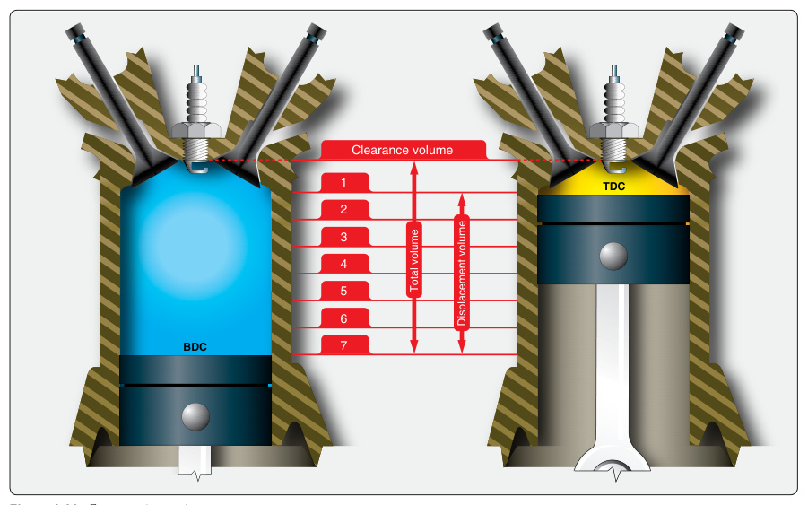

항공기 왕복엔진(Reciprocating Engine)은 실린더 배열에 따라 분류된다: 직렬형(In-line), 대향형(Opposed/수평대향), V형(V-type), 성형(Radial).Reciprocating engines are classified by cylinder arrangement: in-line, opposed (horizontally opposed), V-type, and radial.
현대 경항공기는 대부분 수평대향형(Horizontally Opposed)을 쓴다 — 무게 대비 출력이 좋고 전면면적이 작아 항력이 적다.Most modern light aircraft use the horizontally opposed type because it has a good power-to-weight ratio and a small frontal area that produces low drag.
가스터빈엔진(Gas Turbine Engine)은 터보제트·터보팬·터보프롭·터보샤프트로 나뉜다.Gas turbine engines are divided into turbojet, turbofan, turboprop, and turboshaft types.

에너지 변환
Energy Transformation항공기 엔진의 목적은 연료 속 화학에너지를 열에너지로, 다시 유용한 기계적 일로 변환하는 것이다.The purpose of an aircraft engine is to convert the chemical energy in fuel into heat energy, then into useful mechanical work.
왕복엔진과 가스터빈엔진의 근본적 차이는 열을 가하는 방식이다. 왕복엔진은 정적(定積) 사이클(constant-volume), 가스터빈은 정압(定壓) 사이클(constant-pressure)로 에너지를 방출한다.The basic difference is how heat is added: a reciprocating engine uses a constant-volume cycle, while a gas turbine uses a constant-pressure cycle.
정적 사이클
Constant-Volume Cycle정적 원리로 작동하는 왕복엔진에는 2행정(two-stroke)과 4행정(four-stroke) 두 종류가 있다. 작동 원리는 본질적으로 같으며, 차이는 1사이클을 완성하는 데 필요한 크랭크샤프트 회전수에 있다.Two types operate on the constant-volume principle: two-stroke and four-stroke. The principle is essentially the same; the difference is the number of crankshaft revolutions needed to complete the cycle.
4행정 엔진이 항공기 동력으로 가장 널리 쓰이지만, 2행정 엔진은 초경량기(ultralight)와 소형 키트 항공기 동력으로 인기를 얻고 있다.The four-stroke engine is most widely used for aircraft, while two-stroke engines are popular for ultralights and small kit aircraft.
4행정 5사건 사이클 (오토 사이클)
Four-Stroke, Five-Event Cycle왕복엔진의 작동을 설명하는 에너지 방출 사이클이 오토 사이클(Otto cycle), 즉 4행정 5사건 사이클이다. 4행정은 흡입(intake)·압축(compression)·동력(power)·배기(exhaust)이고, 5사건은 여기에 점화(ignition)를 더한 것이다.The Otto cycle describes how a reciprocating engine works. The four strokes are intake, compression, power, and exhaust; the five events add ignition.
흡입행정에서 피스톤이 내려가며 부피가 증가하지만 압력은 비교적 일정하다(PV선도 A-B). 압축행정에서 두 밸브가 닫히고 부피가 줄며 압력이 상승한다(B-C).On the intake stroke the volume increases while pressure stays relatively constant (A-B). On compression both valves close, volume decreases, and pressure rises (B-C).
상사점(TDC) 약 20° 전 점화플러그가 점화하여 압축된 혼합기가 부드럽고 점진적으로 연소한다. 연소가 만든 고압이 동력행정에서 피스톤을 밀어내며, 이 구간(C-D)에서만 유용한 일이 이루어진다.About 20° before TDC the spark plug fires and the mixture burns smoothly. The high pressure drives the piston down on the power stroke (C-D) — the only useful work in the cycle.

- A. 흡입, 점화, 압축, 폭발, 배기intake, ignition, compression, power, and exhaust.
- B. 흡입, 압축, 폭발, 점화, 배기intake, compression, power, ignition, and exhaust.
- C. 흡입, 압축, 점화, 폭발, 배기intake, compression, ignition, power, and exhaust.
- A. 흡입밸브는 압축행정에서 닫힌다The intake valve closes on the compression stroke.
- B. 배기밸브는 배기행정에서 열린다The exhaust valve opens on the exhaust stroke.
- C. 흡입밸브는 흡입행정에서 닫힌다The intake valve closes on the intake stroke.
- A. 흡입행정intake stroke.
- B. 폭발행정power stroke.
- C. 압축행정compression stroke.
밸브 오버랩과 타이밍
Valve Overlap & Timing왕복엔진에서 사건은 순간적으로 일어나지 않는다. 혼합기와 배기가스는 질량(관성)을 가지므로 흐름을 시작·정지하는 데 시간이 필요하다. 그래서 밸브는 피스톤이 정확히 상·하사점에 있을 때 여닫히지 않는다.Events do not occur instantaneously. The fuel-air charge and exhaust gases have mass (inertia), so valves do not open or close exactly at top or bottom dead center.
흡기밸브는 배기행정 끝 상사점 약 15° 전에 열리고, 배기밸브는 흡입행정에서 상사점 약 15° 후까지 열려 있다. 이렇게 두 밸브가 동시에 열려 있는 구간을 밸브 오버랩(valve overlap)이라 한다.The intake valve opens about 15° before TDC, and the exhaust valve stays open until about 15° after TDC. This period when both valves are open is called valve overlap.
밸브 오버랩은 배기가스의 관성을 이용해 신선한 혼합기를 실린더로 끌어들여 체적효율과 냉각을 향상시킨다. 흡기밸브는 하사점을 지나 압축행정 약 60°까지 열려 있어 최대한 많은 혼합기를 받아들인다.Valve overlap uses the inertia of exiting exhaust gases to help draw in the fresh charge, improving volumetric efficiency and cooling. The intake valve stays open about 60° past bottom center to admit as much charge as possible.

- A. 배기행정 끝과 흡입행정 시작At the end of the exhaust stroke and the beginning of the intake stroke.
- B. 폭발행정 끝과 배기행정 시작At the end of the power stroke and the beginning of the exhaust stroke.
- C. 압축행정 끝과 폭발행정 시작At the end of the compression stroke and the beginning of the power stroke.
2행정 사이클
Two-Stroke Cycle2행정 엔진은 가장 단순한 형태의 왕복엔진으로, 피스톤이 한 번 오르내리는(2행정) 동안 1사이클을 완성한다. 모든 하강행정이 동력행정이라 보통 고RPM으로 작동한다.The two-stroke engine is the simplest reciprocating engine, completing a cycle in one up-and-down piston movement. Every downward stroke is a power stroke, so it runs at high RPM.
2행정 엔진에는 두 가지 고유 문제가 있다: 냉각 곤란(매 행정이 동력행정이라 냉각 간격이 없음)과 점화플러그 오손(연료에 오일을 섞어 윤활하므로). 크랭크케이스 압축식과 블로워(과급)식 두 종류가 있다.Two inherent problems exist: cooling difficulty (no cooling interval) and spark plug fouling (oil mixed with fuel). Two types use crankcase compression or a blower (supercharger).
일과 동력
Work and Power일(Work)은 힘(파운드)과 그 힘이 작용한 거리(피트 또는 인치)의 곱이다(일 = 힘 × 거리). 일의 측정에는 시간이 포함되지 않는다.Work is the product of force (pounds) and the distance through which it acts (feet or inches): Work = Force × Distance. Time is not involved in measuring work.
동력(Power)은 일을 하는 시간율, 즉 단위 시간당 한 일이다. 같은 일이라도 빨리 하면 더 큰 동력이 필요하다. 미국에서는 동력을 분당 피트파운드 또는 마력(horsepower)으로 측정한다.Power is the time rate of doing work. The same work done faster requires more power. In the US, power is measured in foot-pounds per minute or horsepower.
1마력(HP)은 1분에 33,000 피트파운드, 또는 1초에 550 피트파운드의 일에 해당한다.One horsepower equals 33,000 foot-pounds of work per minute, or 550 foot-pounds per second.
마력: 지시·마찰·제동
Indicated, Friction, Brake Horsepower왕복엔진에는 세 가지 마력이 있다: 지시마력(IHP), 제동마력(BHP), 마찰마력(FHP). 관계식은 IHP = FHP + BHP 이다.There are three types: indicated (IHP), brake (BHP), and friction (FHP) horsepower. The relationship is IHP = FHP + BHP.
지시마력(IHP)은 실린더 내부에서 발생하는 이론상 마력으로, 직접 측정할 수 없고 피스톤 면적·평균유효압력(MEP)·행정·RPM 등으로 계산한다.Indicated horsepower is the theoretical power developed inside the cylinders; it cannot be measured directly but is calculated from piston area, mean effective pressure (MEP), stroke, and RPM.
마찰마력(FHP)은 엔진 내부 부품을 움직이고 흡입·압축·배기를 수행하는 데 쓰이는 마력으로, IHP와 BHP의 차이다. 제동마력(BHP)은 프로펠러축에 실제 전달되는 마력으로, 다이나모미터(dynamometer)로 토크를 측정해 구한다.Friction horsepower drives the internal parts and performs intake/compression/exhaust; it is the difference between IHP and BHP. Brake horsepower is the actual power delivered to the propeller shaft, measured with a dynamometer.
토크와 토크미터
Torque and Torquemeter토크(Torque)는 회전을 일으키거나 일으키려는 힘이다. 제동평균유효압력(BMEP)은 동력행정 중 실린더 내부의 이론상 평균압력으로, 엔진이 내는 토크와 관계되며 제동마력을 알면 계산할 수 있다.Torque is a force that produces or tries to produce rotation. Brake mean effective pressure (BMEP) is the theoretical average cylinder pressure during the power stroke; it relates to engine torque and can be calculated from brake horsepower.
대형 왕복엔진(구형 폭격기·여객기)에는 토크미터(torquemeter)가 있어, 프로펠러 감속기어와 엔진 노즈 사이 유압실린더가 토크 반력을 측정해 BMEP를 psi로 지시했다.Large reciprocating engines on older bombers and airliners used a torquemeter — hydraulic cylinders between the propeller reduction gear and the engine nose measured the torque reaction and indicated BMEP in psi.
엔진 출력 결정 요소
Factors Affecting Engine Power엔진 출력은 조종사가 제어할 수 없는 세 고정값(보어·행정·실린더 수)과 상수(33,000), 그리고 조종사가 제어할 수 있는 두 변수(엔진 RPM, BMEP)로 결정된다.Engine power is determined by three fixed values (bore, stroke, number of cylinders), a constant (33,000), and two variables the pilot controls (engine RPM and BMEP).
고정피치 프로펠러 엔진은 스로틀이 RPM을 제어하고 프로펠러 부하가 매니폴드 압력을 결정한다. 정속 프로펠러 엔진은 프로펠러 피치로 RPM을, 스로틀로 매니폴드 압력(따라서 BMEP)을 제어한다.With a fixed-pitch propeller, the throttle controls RPM and the propeller load sets manifold pressure. With a constant-speed propeller, propeller pitch controls RPM and the throttle controls manifold pressure (thus BMEP).
열효율
Thermal Efficiency열효율(Thermal efficiency)은 연료의 전체 열에너지 잠재력 대비 실제로 생산된 유용한 일의 비율이다. 왕복엔진은 연료 에너지의 약 1/3(약 31%)만 유용한 일로 변환하는 비효율적 장치다.Thermal efficiency is the ratio of useful work produced to the total potential heat energy of the fuel. A reciprocating engine converts only about one-third (~31%) of the fuel's energy into useful work.
에너지의 약 절반은 배기로, 약 12%는 실린더(냉각·오일)로, 약 6%는 압축과 부품 구동(마찰)으로 손실된다. 제동 열효율(BTE)은 연소된 연료 열량 대비 프로펠러축이 한 일의 비율로 계산한다.About half the energy is lost out the exhaust, ~12% through the cylinder (cooling/oil), and ~6% to compression and friction. Brake thermal efficiency (BTE) is the ratio of work done by the propeller shaft to the heat energy of the fuel burned.
체적효율
Volumetric Efficiency체적효율(Volumetric efficiency)은 실린더에 실제로 들어간 혼합기 부피를 같은 대기조건에서 실린더가 담을 수 있는 부피(1실린더 변위)로 나눈 비율이다. 엔진의 '호흡' 능력을 나타낸다.Volumetric efficiency is the ratio of the charge actually taken into the cylinder to the volume the cylinder could hold under the same conditions. It expresses the engine's ability to breathe.
부적절한 밸브타이밍, 흡입계통의 급한 굴곡, 높은 기화기 공기온도, 더러운 에어필터, 막힌 배기계통은 체적효율을 떨어뜨린다. 적절한 밸브 오버랩은 체적효율을 높인다.Improper valve timing, sharp induction bends, high carburetor air temperature, a dirty air filter, and a restricted exhaust all reduce volumetric efficiency. Adequate valve overlap increases it.
무과급(자연흡기, naturally aspirated) 엔진은 체적효율이 100%를 넘을 수 없지만, 과급기(supercharger)는 공기를 미리 압축하므로 과급 엔진의 체적효율은 100%를 초과할 수 있다.A naturally aspirated engine can never reach 100% volumetric efficiency, but a supercharger compresses the air first, so a supercharged engine can exceed 100%.
- A. 전개(full throttle) 운전, 낮은 실린더헤드 온도, 높은 기화기 공기온도Full throttle operations, low cylinder head temperatures, and high carburetor air temperatures.
- B. 낮은 실린더헤드 온도, 부적절한 밸브타이밍, 흡기계통의 급격한 굴곡Low cylinder head temperatures, improper valve timing, and sharp bends in the induction system.
- C. 부적절한 밸브타이밍, 흡기계통의 급격한 굴곡, 높은 기화기 공기온도Improper valve timing, sharp bends in the induction system, and high carburetor air temperatures.
기계효율
Mechanical Efficiency기계효율(Mechanical efficiency)은 실린더 내부에서 발생한 동력 대비 프로펠러축에 전달된 동력의 비율, 즉 제동마력을 지시마력으로 나눈 값이다.Mechanical efficiency is the ratio of power delivered to the propeller shaft to the power developed inside the cylinders — brake horsepower divided by indicated horsepower.
항공기 왕복엔진은 기계적으로 매우 효율적이며, 90%의 기계효율은 비교적 흔하다.Aircraft reciprocating engines are mechanically quite efficient; a mechanical efficiency of 90% is relatively common.
피스톤 변위
Piston Displacement피스톤 변위(Piston displacement)는 크랭크샤프트 1회전 동안 모든 실린더의 피스톤이 쓸고 지나간 총 부피다(피스톤 면적 × 행정 × 실린더 수). 미국에서는 입방인치(cubic inch)로 표시한다.Piston displacement is the total volume swept by all pistons during one crankshaft revolution (piston area × stroke × number of cylinders). In the US it is expressed in cubic inches.
일반적으로 변위가 클수록 출력이 크다. 보어와 행정이 같은 '스퀘어(square)' 엔진은 마모율과 토크 곡선의 균형이 우수하며, 현대 엔진은 대개 행정이 보어보다 짧은 '언더스퀘어(under-square)'로 효율적인 토크를 낸다.Generally, greater displacement means more power. A 'square' engine (equal bore and stroke) balances wear and torque well; most modern engines are 'under-square' (shorter stroke) for efficient torque.
- A. 740 cubic inches740 cubic inches.
- B. 1,425 cubic inches1,425 cubic inches.
- C. 1,283 cubic inches1,283 cubic inches.
- A. TDC 부근에서 최대속도at maximum velocity around TDC.
- B. 360° 전체에서 일정constant during the entire 360° of crankshaft travel.
- C. TDC 후 90°에서 최대속도at maximum velocity 90° after TDC.
압축비
Compression Ratio압축비(Compression ratio)는 피스톤이 하사점에 있을 때 피스톤 위 실린더 부피를, 상사점에 있을 때의 부피(연소실 공간)로 나눈 비율이다.Compression ratio is the ratio of the cylinder volume above the piston at bottom dead center to the volume at top dead center (the combustion chamber space).
압축비를 높이면 엔진이 더 많은 열에너지를 유용한 일로 변환하고, 실린더 벽으로의 열손실이 줄어 실린더가 더 차갑게 작동한다. 압축비가 높을수록, 매니폴드 압력이 높을수록 더 큰 출력을 낼 수 있다.Raising the compression ratio converts more heat energy into useful work and reduces heat loss to the cylinder walls, so the cylinder runs cooler. Higher compression ratio and higher manifold pressure allow more power.

디토네이션
Detonation압축비와 매니폴드 압력에는 실용적 한계가 있는데, 이를 결정하는 것이 연료의 디토네이션 특성이다. 압축은 혼합기를 가열하며, 폭발할 만큼 뜨거워질 수 있다. 이 통제 불능의 폭발이 디토네이션(detonation)이다.There is a practical limit to compression ratio and manifold pressure, set by the fuel's detonation characteristics. Compression heats the charge, which can get hot enough to explode — this uncontrolled explosion is detonation.
정상 연소의 화염전파는 초당 25~100피트인데, 디토네이션 화염전파는 초당 약 4,000~9,000피트로 저성능 폭약에 맞먹는다. 이런 충격파는 실린더 내부에 심한 충격력을 가해 신속히 제거하지 않으면 엔진 내부 손상을 일으킨다.Normal flame-front travel is 25–100 ft/sec, but detonation travels at ~4,000–9,000 ft/sec, comparable to low-order explosives. These shock waves severely stress the cylinder and cause internal engine damage if not eliminated quickly.
디토네이션은 엔진에 지정된 것보다 낮은 옥탄가(octane rating)나 퍼포먼스 넘버의 연료를 사용할 때 발생할 수 있다.Detonation may be caused by using fuel with a lower octane rating or performance number than specified for the engine.
크랭크샤프트(Crankshaft)는 피스톤의 왕복운동을 회전운동으로 바꾸는 핵심 부품이다.The crankshaft is the key component that changes the reciprocating motion of the pistons into rotary motion.
주요 부위: 메인 저널(Main journal, 베어링 지지), 크랭크핀(Crankpin, 커넥팅로드 연결), 크랭크암(Crank arm), 평형추(Counterweight, 진동 억제).Main parts: the main journals (supported by bearings), the crankpins (connected to the connecting rods), the crank arms, and the counterweights (which dampen vibration).
재질은 고강도 합금강(Alloy steel) 단조품이며, 동적·정적 평형(Balance)이 정밀하게 맞춰져 있다.It is a forging made of high-strength alloy steel and is precisely balanced both statically and dynamically.
![crankshaft]()
- A. 피스톤the piston.
- B. 피스톤과 커넥팅로드 대단부 모두both the piston and the large end of the connecting rod.
- C. 피스톤과 커넥팅로드 소단부 모두both the piston and the small end of the connecting rod.
커넥팅로드(Connecting Rod)는 피스톤과 크랭크샤프트를 연결한다.The connecting rod links the piston to the crankshaft.
소단부(Small end)는 피스톤핀에, 대단부(Big end)는 크랭크핀에 연결된다.The small end connects to the piston pin, and the big end connects to the crankpin.
성형엔진은 마스터로드(Master rod)+아티큘레이팅로드(Articulating rod) 구조를 쓴다.Radial engines use a master-rod and articulating-rod arrangement.

피스톤(Piston)은 연소 압력을 받아 커넥팅로드로 힘을 전달한다.The piston receives the force of combustion and transmits it through the connecting rod.
구성: 피스톤헤드(Head/Crown), 링홈(Ring groove), 스커트(Skirt), 핀보스(Pin boss).Parts: the head (crown), the ring grooves, the skirt, and the pin boss.
알루미늄 합금으로 제작되어 가볍고 열전도가 좋다. 헤드 형상에 따라 평면형·오목형·볼록형으로 나뉜다.It is made of aluminum alloy, which is light and conducts heat well. By head shape it is classified as flat, recessed (concave), or domed (convex).

피스톤링(Piston Ring)은 3종류: 압축링(Compression ring, 가스 누설 방지), 오일링(Oil control ring, 윤활유 조절), 오일스크레이퍼링(Oil scraper).There are three types of piston rings: compression rings (to seal combustion gases), oil control rings (to regulate lubricating oil), and oil scraper rings.
기능: 연소실 기밀 유지, 실린더벽 윤활유 제어, 피스톤 열을 실린더벽으로 전달.Functions: sealing the combustion chamber, controlling oil on the cylinder wall, and transferring piston heat to the cylinder wall.
장착 시 링갭(Ring gap) 간격과 엇갈림(Stagger) 배치가 중요하다.When installing, the ring gap clearance and the staggering of the gaps are important.

실린더(Cylinder)는 연소가 일어나는 공간으로, 실린더헤드(Head)+배럴(Barrel)로 구성된다.The cylinder is where combustion takes place; it consists of the cylinder head and the barrel.
헤드는 알루미늄 합금 주조, 배럴은 강(Steel)으로 만들어 결합한다. 외부 냉각핀(Cooling fin)으로 공랭한다.The head is cast aluminum alloy and the barrel is steel, joined together. External cooling fins provide air cooling.
밸브시트(Valve seat), 스파크플러그 보스, 흡·배기포트가 헤드에 배치된다.The valve seats, spark plug bosses, and intake/exhaust ports are located in the head.

밸브(Valve)는 흡기·배기를 제어한다. 흡기밸브(Intake)와 배기밸브(Exhaust)가 있다.The valves control the intake and exhaust of the cylinder. There are two types: the intake valve and the exhaust valve.
배기밸브는 고온에 노출되어 내부에 금속나트륨(Sodium)을 채워 냉각하는 경우가 많다.Because the exhaust valve is exposed to high temperatures, it is often partially filled with metallic sodium for cooling.
구성: 밸브헤드(Head), 밸브스템(Stem), 밸브페이스(Face), 팁(Tip).Main parts: the valve head, stem, face, and tip.

밸브를 여닫는 기구: 캠(Cam) → 태핏/리프터(Tappet/Lifter) → 푸시로드(Push rod) → 로커암(Rocker arm) → 밸브.The valve-operating mechanism: cam → tappet/lifter → push rod → rocker arm → valve.
밸브스프링(Valve spring)이 밸브를 닫힌 위치로 복귀시킨다.The valve spring returns the valve to its closed position.
밸브간극(Valve clearance/Lash) 조정이 정비의 핵심이며, 유압리프터(Hydraulic lifter)는 자동 조정된다.Adjusting valve clearance (lash) is central to maintenance; hydraulic lifters adjust it automatically.

베어링(Bearing)은 회전·왕복 부품의 마찰을 줄이고 하중을 지지한다.Bearings reduce friction of rotating and reciprocating parts and support their loads.
종류: 평면베어링(Plain bearing), 볼베어링(Ball bearing), 롤러베어링(Roller bearing).Types: plain bearings, ball bearings, and roller bearings.
왕복엔진 크랭크샤프트는 주로 평면베어링, 가스터빈은 볼·롤러베어링을 쓴다.Reciprocating-engine crankshafts mainly use plain bearings, while gas turbines use ball and roller bearings.

4행정 사이클(Otto Cycle): 흡입(Intake) → 압축(Compression) → 폭발/동력(Power) → 배기(Exhaust).The four-stroke cycle (Otto cycle): intake → compression → power → exhaust.
크랭크샤프트 2회전(720°)에 1사이클이 완성된다.One complete cycle is finished in two crankshaft revolutions (720°).
밸브타이밍(Valve timing)과 점화시기(Ignition timing)가 출력·효율을 좌우한다.Valve timing and ignition timing determine power output and efficiency.
왕복엔진 구성과 작동 사이클 📙 Jeppesen 참고
Reciprocating Engine Construction & Cycle왕복엔진은 연소압으로 피스톤을 왕복시켜 커넥팅로드·크랭크축으로 회전운동을 만듭니다. 실린더 배열로 대향형(opposed, 소형기 표준)·성형(radial)·직렬(in-line)·V형이 있습니다. 4행정 오토 사이클은 흡입→압축→폭발(동력)→배기로, 크랭크축 2회전에 실린더당 1회 동력행정을 냅니다. 밸브 개폐 시기는 캠이 정하며, 흡·배기밸브가 상사점 부근에서 함께 열리는 밸브 오버랩(valve overlap)이 체적효율을 높입니다.A reciprocating engine reciprocates pistons by combustion pressure, turning it into rotation through connecting rods and crankshaft. Cylinder arrangements are opposed (standard on light aircraft), radial, in-line, and V. The four-stroke Otto cycle is intake → compression → power → exhaust, giving one power stroke per cylinder per two crankshaft revolutions. Cam timing sets valve events, and valve overlap (intake and exhaust both open near top dead center) improves volumetric efficiency.
출력 관련 용어: 압축비(compression ratio)는 하사점 대 상사점 실린더 체적비로, 높을수록 효율이 좋지만 디토네이션 위험이 커집니다. 지시마력(IHP)에서 마찰손실을 뺀 것이 제동마력(BHP)이고, 체적효율·열효율·기계효율이 실제 출력을 좌우합니다. 디토네이션(자발적 폭발연소)과 조기점화(핫스팟에 의한 조기 점화)는 실린더를 손상하므로 올바른 연료등급·냉각·혼합비로 예방합니다.Power terms: compression ratio is the cylinder volume at bottom vs top dead center — higher improves efficiency but raises detonation risk. Indicated horsepower minus friction loss gives brake horsepower, and volumetric, thermal, and mechanical efficiency govern real output. Detonation (spontaneous explosive burning) and preignition (early ignition from a hot spot) damage cylinders, prevented by correct fuel grade, cooling, and mixture.
왕복엔진의 종류 심화 📙 Jeppesen 정독
Types of Reciprocating Engines (In-Depth)왕복엔진은 실린더 배열(성형·직렬·V형·대향형)과 연료(가솔린·디젤)로 분류합니다. 성형(radial)엔진은 크랭크케이스 둘레에 실린더를 방사형으로 배치하며 회전형과 정치형으로 나뉩니다. 회전형(rotary)은 1차대전기에 쓰였는데 크랭크축은 고정되고 실린더·프로펠러가 함께 회전해 출력-중량비가 높았으나, 큰 회전질량이 만드는 토크로 조종이 어렵고 기화·윤활·배기 계통이 복잡해 발전이 제한됐습니다.Reciprocating engines are classed by cylinder arrangement (radial, in-line, V, opposed) and fuel (gasoline or diesel). In a radial engine cylinders sit around the crankcase; the two kinds are rotary and static. Early WWI rotary radials kept the crankshaft stationary while the cylinders and propeller spun, giving a high power-to-weight ratio, but the large rotating mass produced control-robbing torque and complicated induction, lubrication, and exhaust.

정치형(static) 성형엔진은 크랭크케이스가 고정되고 크랭크축이 돌아 프로펠러를 구동하며, 신뢰성이 높아 장거리 비행을 가능케 했습니다. 단열 성형엔진은 보통 홀수(5~9)의 실린더를 하나의 크랭크핀에 연결하고, 출력을 키우면서 전면적을 억제하려고 다열(14·18기통) 성형엔진을 만들되 냉각을 위해 열을 엇갈리게 배치했습니다. 최대 양산 성형엔진은 P&W R-4360으로 7기통 4열 28기통·최대 3,400마력입니다.Static radials keep the crankcase fixed and rotate the crankshaft to drive the propeller; their reliability enabled long-distance flights. Single-row radials use an odd number of cylinders (5–9) on one crankpin, and to raise power without enlarging frontal area, multiple-row radials (14 or 18 cylinders) stagger the rows for cooling. The largest production radial was the P&W R-4360 — 28 cylinders in four staggered rows of seven, up to 3,400 hp.
직렬(in-line)엔진은 크랭크축과 평행하게 짝수 실린더를 한 줄로 놓으며, 정립형과 도립형이 있습니다. 전면적이 작아 유선형 카울에 넣기 좋고, 도립형은 크랭크축이 높아 프로펠러 지상간격이 커져 착륙장치를 짧게 할 수 있습니다. 다만 출력-중량비가 낮고 뒤쪽 실린더 냉각이 불리해 공랭은 4~6기통으로 제한되거나 액랭을 씁니다. V형은 두 뱅크를 45·60·90°로 배치해 하나의 크랭크케이스·크랭크축을 공유하며 8~12기통으로 큰 출력을 냅니다.In-line engines place an even number of cylinders in one row parallel to the crankshaft, upright or inverted. Their small frontal area suits streamlined cowls, and an inverted layout raises the crankshaft for greater propeller ground clearance and shorter gear. Drawbacks are low power-to-weight and poor cooling of rear cylinders, so air-cooled versions are limited to 4–6 cylinders or use liquid cooling. V-type engines set two banks 45/60/90° apart sharing one crankcase and crankshaft, using 8–12 cylinders for high power.

대향형(opposed)은 오늘날 경항공기의 표준으로 36~400마력이며, 짝수 실린더가 크랭크케이스를 사이에 두고 마주 봅니다. 대개 공랭·수평 장착(회전익은 수직)이고 크랭크케이스가 가벼워 출력-중량비가 좋으며 마주 보는 동력행정이 서로 상쇄돼 진동이 적습니다. 반켈(Wankel)엔진은 왕복이 아니라 편심축과 삼각 로터가 장방형 연소실에서 도는 오토 사이클 로터리 엔진으로, 부품이 적어 신뢰성·출력-중량비가 좋지만 초기엔 연소실 밀봉이 과제였습니다.Opposed engines are today's light-aircraft standard at 36–400 hp, with even cylinders facing across the crankcase. They are usually air-cooled and horizontally mounted (vertical in helicopters); the light crankcase gives a good power-to-weight ratio, and opposing power impulses cancel to reduce vibration. The Wankel is not a reciprocating engine but an Otto-cycle rotary using an eccentric shaft and triangular rotor in an oblong chamber — fewer parts give good reliability and power-to-weight, though early designs struggled with combustion-chamber sealing.
- A. 동력행정 간격이 더 가깝다The power impulses are spaced closer together.
- B. 동력행정 간격이 더 멀다The power impulses are spaced farther apart.
- C. 평형추가 더 크다The engine has larger counterbalance weights.
크랭크케이스 구조 심화 📙 Jeppesen 정독
Crankcase Construction (In-Depth)크랭크케이스는 엔진의 중심 구조로 내부 부품을 담고 실린더·액세서리·기체 장착점을 제공하며 윤활유를 밀봉합니다. 연소가 피스톤에 주는 힘과 프로펠러의 원심·관성력으로 방향과 크기가 계속 바뀌는 굽힘모멘트를 받으므로 매우 견고해야 하며, 대개 주조 알루미늄 합금으로 2~5조각으로 만듭니다.The crankcase is the engine's core structure: it holds the internal parts, provides mounting points for cylinders, accessories, and the airframe, and seals the lubricating oil. It endures bending moments that constantly change direction and magnitude from combustion forces on the pistons and centrifugal/inertial propeller loads, so it must be very rigid — usually cast aluminum alloy in two to five pieces.
대향형 크랭크케이스는 보통 주조 알루미늄 2조각으로, 사형주조 또는 영구주형(permamold)으로 만듭니다. 영구주형품은 밀도가 높아 벽을 얇게 하고 피로 균열에 강합니다. 실린더가 앉는 실린더 패드(cylinder pad)를 기계가공하고, 길이방향으로 횡격벽(transverse web)을 주조해 주베어링과 캠샤프트 보스를 지지합니다. 수직 분할면은 스터드·볼트·관통볼트로 조이고, 경화되지 않는 얇은 가스켓 컴파운드와 때로는 실크 실로 밀봉하며, 오일 통로가 뚫려 윤활계통의 일부가 됩니다.An opposed-engine crankcase is typically two cast-aluminum pieces made by sand casting or permanent mold (permamold). Permamold parts are denser, allowing thinner walls and better fatigue-crack resistance. Machined cylinder pads seat the cylinders, and transverse webs cast lengthwise support the main bearings and camshaft bosses. The vertical split is held by studs, bolts, and through-bolts and sealed with a thin nonhardening gasket compound (sometimes with an embedded silk thread); drilled oil passages make it part of the lubrication system.

성형엔진 크랭크케이스는 기능별로 노즈·파워·과급기·액세서리 4구획으로 나뉩니다. 노즈 섹션은 앞쪽에서 프로펠러축·캠링·감속기어·조속기 구동축을 지지하고, 파워 섹션은 피스톤 힘을 크랭크축에 전달하며 실린더가 붙습니다. 과급기(디퓨저) 섹션은 파워 섹션 뒤에서 과급기와 엔진 마운트를 담고, 액세서리 섹션은 알루미늄·마그네슘 주물로 마그네토·기화기·펌프·시동기·발전기를 스퍼/베벨 기어열로 구동합니다. 엔진 마운트 러그는 대향형에선 크랭크케이스에 일체 주조하거나 볼트로 붙이고, 성형에선 과급기 섹션 둘레에 배치합니다.A radial crankcase is divided by function into nose, power, supercharger, and accessory sections. The nose section at the front supports the propeller shaft, cam ring, reduction gearing, and governor drive; the power section transfers piston force to the crankshaft and carries the cylinders. The supercharger (diffuser) section sits behind the power section housing the supercharger and engine mounts, while the accessory section — cast aluminum or magnesium — drives magnetos, carburetor, pumps, starter, and generator through a spur/bevel gear train. Engine mounting lugs are cast integral or bolted on for opposed engines and arranged around the supercharger section on radials.

크랭크샤프트 균형·다이내믹 댐퍼 심화 📙 Jeppesen 정독
Crankshaft Balance & Dynamic Damper (In-Depth)크랭크축은 피스톤의 직선 동력펄스를 회전으로 바꿔 프로펠러를 돌립니다. 큰 응력을 견디려고 크롬-니켈-몰리브덴강 같은 강합금으로 단조하며, 주베어링 저널(축을 지지, 최소 2개, 나이트라이딩으로 경화)·크랭크핀(주저널에서 오프셋된 커넥팅로드 저널)·크랭크 치크(핀을 잇고 카운터웨이트를 붙임)로 구성됩니다. 축은 대개 속이 비어 무게를 줄이고 오일 통로 겸 슬러지 수집실이 되며, 원심력이 슬러지의 순환을 막습니다.The crankshaft converts the piston's linear power pulse to rotation to turn the propeller. To withstand high stress it is forged from a strong alloy such as chromium-nickel-molybdenum steel and consists of main bearing journals (support the shaft, at least two, hardened by nitriding), crankpins (connecting-rod journals offset from the main journal), and crank cheeks (join the pins and carry counterweights). The shaft is usually hollow to save weight and doubles as an oil passage and sludge collector, with centrifugal force keeping sludge from circulating.

과도한 진동은 금속을 피로시켜 파손시키므로 크랭크축은 정적·동적으로 균형을 맞춥니다. 정적 균형은 전체 무게가 회전축 둘레로 균형 잡힌 상태로, 나이프-에지 블록에 얹어 어느 위치로 기울면 불균형입니다. 동적 균형은 원심력과 동력펄스를 카운터웨이트로 상쇄한 상태입니다. 다이내믹 댐퍼(dynamic damper)는 크랭크 치크에 스풀형 핀으로 헐겁게 매단 가동 카운터웨이트로, 실린더가 점화할 때마다 진자처럼 흔들려 굽힘력을 흡수합니다. 이는 동력펄스 주파수에 동조된 짧은 진자와 같아, 흔들림을 상쇄 방향으로 되돌립니다.Because excessive vibration fatigues and fails metal, crankshafts are balanced both statically and dynamically. Static balance means the whole assembly is balanced about its axis — placed on knife-edge blocks, it is out of balance if it favors any position. Dynamic balance offsets centrifugal forces and power pulses with counterweights. A dynamic damper is a movable counterweight hung loosely from a crank cheek on spool-shaped pins; it swings like a pendulum with each firing pulse to absorb flexing. It behaves like a short pendulum tuned to the power-impulse frequency, oscillating opposite the applied force to damp it.

크랭크축 형식은 실린더 수·배열에 따릅니다. 단스로(single-throw, 360°)는 단열 성형엔진용으로 크랭크핀 1개·치크 2개·주저널 2개입니다. 투스로(180°)는 복열 성형엔진용, 포스로(four-throw)는 4기통 대향·직렬용으로 주베어링 3개 또는 5개, 식스스로(six-throw, 60° 간격)는 6기통 대향·직렬과 12기통 V형용으로 주베어링 4개입니다. 4기통에서는 크랭크핀 1·4번이 2·3번과 180° 위상차를 이룹니다. 단조 일체형이 많지만, 크랭크핀에 볼트를 관통시켜 조이는 클램프식 2조각 크랭크축도 있습니다.Crankshaft type follows cylinder count and arrangement. A single-throw (360°) crankshaft for single-row radials has one crankpin, two cheeks, and two main journals. A two-throw (180°) serves twin-row radials; a four-throw serves 4-cylinder opposed/in-line engines with three or five main bearings; a six-throw (throws 60° apart) serves 6-cylinder opposed/in-line and 12-cylinder V engines with four main bearings. On a four-cylinder engine, crankpins 1 and 4 are 180° from 2 and 3. Many are one-piece forgings, but clamp-type two-piece crankshafts also exist, bolted through the crankpin.

- A. 가동 평형추는 동적 진동을 줄인다Moveable flyweights serve to reduce the dynamic vibrations in an aircraft reciprocating engine.
- B. 가동 평형추는 비틀림(torsional) 진동을 줄인다Moveable flyweights serve to reduce the torsional vibrations in an aircraft reciprocating engine.
- C. 가동 평형추는 크랭크축 고유진동수에 공진하도록 설계된다Moveable flyweights are designed to resonate at the natural frequency of the crankshaft.
- A. 과도한 오일 소비Excessive oil consumption.
- B. 높은 오일 온도High oil temperatures.
- C. 낮은 오일 온도Low oil temperatures.
엔진 베어링 심화 📙 Jeppesen 정독
Engine Bearings (In-Depth)베어링은 움직이는 두 부품 사이의 마찰을 줄여 지지하는 면으로, 주저널·크랭크핀·커넥팅로드 끝·액세서리 구동축에 쓰입니다. 좋은 베어링은 하중을 견디면서 최소 마찰로 움직임을 허용하고, 매우 좁은 공차로 부품을 고정하며 반경하중·추력하중 또는 둘 다를 감당합니다. 베어링 면의 상대운동은 미끄럼과 구름 두 가지이며, 왕복엔진은 두 방식을 모두 씁니다.A bearing is any surface that supports two moving parts while reducing friction, used at the main journals, crankpins, connecting-rod ends, and accessory drive shafts. A good bearing carries its load with minimum friction, holds parts to very close tolerances, and handles radial loads, thrust loads, or both. Bearing surfaces move by sliding or rolling, and reciprocating engines use both.

평면 베어링(plain)은 주베어링·캠·로드 끝·액세서리에 쓰이며 주로 반경하중을 받고(대향엔진의 플랜지형은 축추력도 감당), 은·청동·배빗·주석·납 같은 비철금속으로 만들거나 은도금강 셸에 납-주석을 입힙니다. 작은 것은 부싱(bushing)이라 하며, 오일라이트(Oilite) 다공질 부싱은 마찰열이 함침된 오일을 표면으로 끌어와 윤활합니다.Plain bearings serve main, cam, rod-end, and accessory positions, carry mainly radial loads (flange types also take axial thrust in opposed engines), and are made of nonferrous metals such as silver, bronze, Babbitt, tin, or lead, or as silver-plated steel shells lead-tin coated. Small ones are called bushings; the porous Oilite bushing draws its impregnated oil to the surface with friction heat for lubrication.
볼 베어링(ball)은 홈이 파인 내·외륜, 연마된 강구, 리테이너로 구성돼 구름마찰이 가장 작고 추력하중에 강해 대형 성형·가스터빈의 추력 베어링과 마그네토·얼터네이터·터보차저·진공펌프 같은 액세서리(밀봉·사전윤활)에 씁니다. 롤러 베어링(roller)은 강구 대신 연마 롤러를 써 접촉면과 구름마찰이 크며, 직선 롤러는 반경하중 전용으로 고출력 엔진 주베어링에, 테이퍼 롤러는 원뿔형 레이스로 반경+추력하중을 함께 견딥니다.Ball bearings — grooved inner and outer races, polished steel balls, and a retainer — have the least rolling friction and handle thrust well, so they serve as thrust bearings in large radials and gas turbines and in sealed, prelubricated accessories like magnetos, alternators, turbochargers, and vacuum pumps. Roller bearings use polished rollers instead of balls for greater contact area and rolling friction; straight rollers take radial loads only (crankshaft mains in high-power engines) while tapered rollers with cone-shaped races take both radial and thrust loads.

- A. 단열 자동조심 볼베어링 외륜 반경은 항상 볼 반경과 같다The outer race of a single-row, self-aligning ball bearing will always have a radius equal to the radius of the balls.
- B. 볼베어링이 롤러베어링보다 구름마찰이 적다There is less rolling friction when ball bearings are used than when roller bearings are employed.
- C. 크랭크축 베어링은 보통 볼타입이다Crankshaft bearings are generally of the ball-type due to their ability to withstand extreme loads without overheating.
- A. 평면(Plain)Plain.
- B. 롤러Roller.
- C. 볼Ball.
- A. 테이퍼 롤러Tapered roller.
- B. 복렬 볼Double-row ball.
- C. 디프그루브 볼Deep-groove ball.
- A. 로커암 베어링(OHV 엔진)Rocker arm bearing (overhead valve engine).
- B. 마스터로드 베어링(성형엔진)Master rod bearing (radial engine).
- C. 크랭크축 메인베어링(성형엔진)Crankshaft main bearing (radial engine).
커넥팅 로드 형식 심화 📙 Jeppesen 정독
Connecting Rod Types (In-Depth)커넥팅 로드는 피스톤의 힘을 크랭크축에 전하는 연결부로, 대개 강합금(저출력은 알루미늄)으로 만듭니다. 무게가 관성과 직결되므로 최대한 가볍게 하되 강도를 유지하며, 단면은 대개 H형이나 I형입니다. 세 가지 형식은 평형(plain)·마스터-아티큘레이티드(master-and-articulated)·포크-앤-블레이드(fork-and-blade)입니다.The connecting rod is the link that transmits piston force to the crankshaft, usually made of steel alloy (aluminum in low-power engines). Because its weight equals inertia, it is made as light as possible while keeping strength, with an H- or I-shaped cross-section. The three types are plain, master-and-articulated, and fork-and-blade.
평형 로드는 대향·직렬엔진에 쓰이며, 피스톤 끝은 피스톤 핀을 받는 청동 부싱, 크랭크핀 끝은 캡과 볼트로 고정하는 2조각 베어링(배빗·납·청동·구리로 라이닝된 강)입니다. 로드는 피스톤·크랭크핀과 균형·끼워맞춤을 맞춰 짝지으므로 분해하면 반드시 같은 실린더·같은 위치에 되돌려야 하며, 로드와 캡에 번호가 각인됩니다.Plain rods serve opposed and in-line engines: the piston end carries a bronze bushing for the piston pin, and the crankpin end uses a two-piece bearing held by a cap and bolts (steel lined with Babbitt, lead, bronze, or copper). Because rods are matched to their pistons and crankpins for balance and fit, a removed rod must go back in the same cylinder and position, and rods and caps are stamped with numbers.

마스터-아티큘레이티드 조립체는 성형엔진용으로, 각 열의 한 피스톤이 마스터 로드로 크랭크핀에 연결되고 나머지는 너클 핀으로 아티큘레이티드(연접) 로드가 붙습니다. 9기통 단열은 마스터 1 + 연접 8, 18기통 복열은 마스터 2 + 연접 16입니다. 크랭크핀 베어링만 진원을 그리고 너클 핀들은 타원 경로를 그리며, 각 로드의 각도차 때문에 너클 핀 구멍을 크랭크핀 중심에서 각기 다른 거리에 둡니다. 포크-앤-블레이드는 V형용으로, 크랭크핀 끝이 갈라진 포크 로드 사이에 블레이드 로드가 들어가 2조각 베어링으로 고정됩니다.The master-and-articulated assembly is used in radial engines: one piston in each row connects to the crankpin by a master rod, and the rest attach with articulated (link) rods via knuckle pins. A 9-cylinder single row uses one master and eight articulated rods; an 18-cylinder double row uses two masters and 16 articulated rods. Only the crankpin bearing travels a true circle while the knuckle pins trace elliptical paths, and because each rod's angularity differs, the knuckle-pin holes sit at varying distances from the crankpin center. The fork-and-blade assembly serves V engines, where a blade rod fits between the prongs of a split fork rod on a shared two-piece bearing.

피스톤·피스톤 링 구조 심화 📙 Jeppesen 정독
Pistons & Piston Rings (In-Depth)피스톤은 실린더 안을 왕복하는 원통형 플런저로, 밸브와 함께 실린더 내 연료·공기·배기 압력을 관리하고 연소력을 커넥팅로드로 전합니다. 알루미늄 합금이나 강 단조품이며 바깥면에 최대 6개의 링 홈을 파고 그 사이를 링 랜드라 합니다. 머리 형상은 평평(flat)·리세스·컵·돔형이 있고 현대 엔진은 대개 평두형입니다. 피스톤 핀 보스는 핀을 지지하고, 스커트는 피스톤을 정렬하며 냉각핀이 있기도 합니다.The piston is a cylindrical plunger reciprocating in the cylinder; with the valves it manages fuel, air, and exhaust pressures and transmits combustion force through the connecting rod. Made of aluminum alloy or steel forging, it has up to six ring grooves machined into its outer surface, with the areas between called ring lands. Head shapes are flat, recessed, cupped, and domed — most modern engines use flat heads. The piston pin boss supports the pin, and the skirt aligns the piston and may carry cooling fins.

피스톤은 가열되면 팽창하는데, 핀 보스 쪽 질량이 많아 그 방향으로 더 팽창해 작동온도에서 타원이 되어 편마모를 일으킬 수 있습니다. 이를 보정하려고 캠 그라운드(cam-ground) 피스톤은 핀 보스 방향 지름을 수천분의 1인치 작게 가공해, 작동온도에서 원형이 되고 웜업 중에도 피스톤을 실린더 중심에 유지합니다.A piston expands when heated, and because of extra mass at the pin boss it expands more in that direction, taking an oval shape at operating temperature that can cause uneven wear. To compensate, a cam-ground piston is machined a few thousandths of an inch smaller parallel to the pin boss, so it becomes round at operating temperature and stays centered in the cylinder during warm-up.
피스톤 링은 ①연소가스 누설 방지 ②오일량 제어 ③피스톤 열을 실린더벽으로 전달의 세 기능을 하며, 스프링 작용으로 실린더벽을 밀어 밀봉합니다. 고급 회주철이나 크롬도금 연강으로 만들고, 링 이음부는 버트(butt, 항공기 최다)·앵글·스텝 조인트가 있습니다. 팽창을 위해 간극이 필요하되 너무 크면 밀봉 불량, 너무 작으면 눌어붙어 실린더벽을 긁습니다. 이음부를 서로 엇갈리게 배치해 블로바이(연소가스가 크랭크케이스로 새어 출력손실·오일소모)를 막습니다. 압축링은 상부 홈에서 가스 누설을 막고(직사각·쐐기·테이퍼 단면), 오일링은 중·하부에서 실린더벽 오일량을 조절합니다.Piston rings serve three functions — sealing combustion gas, controlling oil, and transferring piston heat to the cylinder walls — and are spring-loaded to press against the walls. They are made of high-grade gray cast iron or chrome-plated mild steel, and the ring gap uses a butt joint (most common in aircraft), angle, or step joint. A gap is needed for expansion, but too large seals poorly while too small binds and scores the cylinder wall. Ring gaps are staggered to prevent blow-by (combustion gas leaking to the crankcase, causing power loss and oil consumption). Compression rings in the upper grooves stop gas escape (rectangular, wedge, or tapered sections), while oil rings near the middle and bottom meter oil on the cylinder walls.


- A. 1만 참only 1 is true.
- B. 1, 2 모두 거짓neither 1 nor 2 is true.
- C. 1, 2 모두 참both 1 and 2 are true.
피스톤 핀 심화 📙 Jeppesen 정독
Piston Pins (In-Depth)피스톤 핀은 피스톤과 커넥팅로드를 잇는 관형(tubular) 부품으로, 케이스 경화된 니켈강 단조품입니다. 피스톤과 로드의 움직임이 손목과 비슷해 리스트 핀(wrist pin)이라고도 합니다. 고정 방식은 세 가지 — 고정식(setscrew로 회전 방지), 반부동식(로드가 핀의 축소된 부분을 감싸 헐겁게 연결), 전부동식(로드·피스톤 양쪽에서 자유롭게 회전, 현대 엔진 대부분)입니다.The piston pin joins the piston to the connecting rod; it is tubular and forged from case-hardened nickel-steel. Because the piston-and-rod motion resembles a wrist, it is also called a wrist pin. Three retention styles exist: stationary (a setscrew prevents rotation), semifloating (the rod clamps a reduced-diameter section of the pin), and full-floating (rotates freely in both rod and piston — used in most modern engines).
전부동식 핀은 실린더벽을 긁지 않도록 측방향으로 고정해야 합니다. 세 가지 고정법은 서클릿(circlet, 스냅링처럼 보스 홈에 끼움), 스프링 링(원형 스프링강 코일), 그리고 현재 표준인 피스톤 핀 플러그(piston-pin plug)입니다. 핀 플러그는 무른 알루미늄 마개를 핀 양끝에 끼워 실린더벽에 좋은 베어링면을 주며, 재질이 물러 벽과 접촉해도 손상을 주지 않습니다.A full-floating pin must be held laterally so it does not rub and score the cylinder wall. Three devices do this: a circlet (like a snap ring in a groove in each end of the boss), a spring ring (a single circular spring-steel coil), and today's standard, the piston-pin plug — soft aluminum plugs inserted in the pin ends that provide a good bearing surface against the cylinder wall without damaging it because the aluminum is soft.
실린더 배럴·표면 경화 심화 📙 Jeppesen 정독
Cylinder Barrels & Wall Hardening (In-Depth)실린더는 연소가 일어나는 연소실이자 피스톤·로드·밸브·점화플러그를 담습니다. 내압을 견디되 가볍고 방열이 좋아야 하며 제작·검사·정비가 단순해야 합니다. 현대 엔진은 실린더를 크랭크케이스와 별도로 만들고 헤드를 제작 시 영구 결합합니다 — 헤드를 가열해 팽창시키고 냉각한 배럴에 나사로 조이면, 헤드가 식으며 수축하고 배럴이 데워져 팽창해 기밀 접합이 됩니다. 배럴은 크롬-몰리브덴강·니켈-크롬-몰리브덴강 단조품으로 냉각핀·스커트·장착 플랜지를 가공합니다.The cylinder is the combustion chamber and houses the piston, rod, valves, and spark plugs. It must resist internal pressure yet be light and conduct heat well, and be simple to make, inspect, and maintain. Modern engines make the cylinder separate from the crankcase and permanently attach the head during manufacture — the head is heated to expand, screwed onto a chilled barrel, and as it cools and the barrel warms, the joint becomes gas-tight. Barrels are forged chromium-molybdenum or nickel-chromium-molybdenum steel machined with cooling fins, a skirt, and a mounting flange.

초크 보어(choke bore) 실린더는 헤드 쪽 상부가 질량이 많아 더 팽창하므로, 상온에서 상부 지름을 하부보다 약 0.003~0.005인치 작게 가공해 작동온도에서 지름이 균일해지게 합니다. 실린더 내벽은 피스톤 링과 계속 접촉하므로 마모를 줄이려 경화합니다.A choke-bore cylinder is machined a bit smaller (about 0.003–0.005 in) at the top than at the skirt, because the greater mass near the head expands more; the taper yields a uniform bore at operating temperature. Because the piston rings continuously wipe the bore, the wall is hardened to reduce wear.
벽 경화 두 방법: ①나이트라이딩 — 배럴을 암모니아 가스 속 약 1,000°F로 가열하면 질소가 강 속 소량의 알루미늄과 결합해 단단한 질화층(두께 약 0.020인치)을 형성합니다. 치수 변화는 만분의 2~4인치로 미미하나 오일 보유가 약해 부식에 취약하므로 장기 보관 시 방청유를 바릅니다(파란 페인트로 식별). ②크롬 도금 — 전기도금으로 크롬층을 입혀 부식에 강하고 마모 한계를 넘은 실린더를 원치수로 재생할 수 있습니다(주황 페인트 식별). 크롬이 너무 매끈해 오일을 못 잡으므로 역전류로 미세균열망을 만드는 크롬 채널링을 하며, 오일 소모가 약간 많고 오버홀 직후 길들이기가 까다롭습니다. 이를 보완한 실리콘카바이드 함침 도금(CermiNil·Nickel+Carbide·Nikasil)도 있습니다.Two hardening methods: (1) Nitriding — the barrel is heated to about 1,000°F in ammonia gas; nitrogen combines with the small amount of aluminum in the steel to form a hard nitrided layer (~0.020 in thick). Dimensional change is only two-to-four ten-thousandths of an inch, but it holds oil poorly and is corrosion-prone, so it needs preservative oil in long storage (identified by blue paint). (2) Chrome plating — electroplating a chromium layer resists corrosion and can restore a worn cylinder to size (identified by orange paint). Because chromium is too smooth to hold oil, reverse current creates a network of microcracks (chrome channeling); such cylinders use slightly more oil and are harder to break in after overhaul. Silicon-carbide-impregnated platings (CermiNil, Nickel+Carbide, Nikasil) were developed to overcome these drawbacks.

- A. 작동온도에서 곧은 보어를 제공provide a straight cylinder bore at operating temperatures.
- B. 운전 중 링을 약간 휘게 해 링 고착 방지flex the rings slightly during operation and reduce the possibility of the rings sticking in the grooves.
- C. 시동 시 압축압력 증가increase the compression pressure for starting purposes.
- A. 질화(nitriding)nitriding.
- B. 호닝(honing)honing.
- C. 담금질(quenching)quenching.
실린더 헤드 심화 📙 Jeppesen 정독
Cylinder Heads (In-Depth)실린더 헤드는 배럴을 덮어 연소실을 형성하고 흡·배기 포트, 점화플러그, 밸브 작동기구를 담으며 배럴의 열을 방출합니다. 공랭 헤드는 열전도·경량·내구성이 좋은 단조 또는 다이캐스트 알루미늄 합금으로 만들며, 내부 형상은 평평·반구형·뾰족형이 있고 반구형이 더 튼튼하고 배기가스 소기가 빨라 가장 널리 쓰입니다.The cylinder head covers the barrel to form the combustion chamber and holds the intake/exhaust ports, spark plugs, and valve gear while shedding heat from the barrel. Air-cooled heads are forged or die-cast aluminum alloy for good heat conduction, light weight, and durability; the inner shape may be flat, semispherical, or peaked, with the semispherical form most common because it is stronger and scavenges exhaust rapidly.


냉각핀은 헤드 외부에 주조·가공하며, 가장 뜨거운 배기밸브 부위에 핀 면적을 더 많이 두고 연료-공기 혼합기로 냉각되는 흡기 부위엔 적게 둡니다. 점화플러그 구멍은 예전엔 청동·강 부싱을 수축·나사 체결했으나, 현대엔 손상 시 교체가 쉬운 스테인리스 헬리코일(Heli-Coil) 인서트를 씁니다. 흡기 매니폴드는 합성고무 실, 고온의 배기 매니폴드는 금속 가스켓으로 밀봉하고 스터드·너트로 고정합니다.Cooling fins are cast or machined onto the head exterior, with more fin area at the hottest exhaust-valve region and fewer at the intake side, which the fuel-air charge helps cool. Spark plug openings once used shrunk-and-threaded bronze or steel bushings, but modern engines use stainless Heli-Coil inserts that are easy to replace if damaged. Intake manifolds seal with a synthetic-rubber seal and the hot exhaust manifold with a metal gasket, held by studs and nuts.
밸브 심화 📙 Jeppesen 정독
Engine Valves (In-Depth)밸브는 오토 사이클에 맞춰 열고 닫아 실린더로 드나드는 가스를 조절하며, 각 실린더에 최소 흡기·배기 밸브가 하나씩(고출력은 각 2개) 있습니다. 흡기밸브는 온도가 낮아 크롬·니켈·텅스텐강으로, 배기밸브는 고온이라 인코넬(실리콘-크롬)·코발트-크롬 합금 같은 내열재로 만듭니다. 가장 흔한 형식은 열리고 닫힐 때 '팝'하는 포핏(poppet) 밸브로, 머리 형상에 따라 평두·세미튤립·튤립·머시룸으로 나뉩니다.Valves open and close on the Otto cycle to regulate gas flow into and out of the cylinder; each cylinder has at least one intake and one exhaust valve (high-power engines use two of each). Intake valves run cooler and use chrome, nickel, or tungsten steel, while hotter exhaust valves use heat-resistant materials such as Inconel (silicon-chromium) or cobalt-chromium alloys. The most common type is the poppet valve, which 'pops' open and closed and is classed by head shape as flat, semi-tulip, tulip, or mushroom.
밸브 면(face)은 시트와 30~60°(흔히 흡기 30°·배기 45°)로 연마해 기밀을 만들고, 코발트-크롬 합금인 스텔라이트(Stellite)를 용접해 내열·내마모를 높입니다. 스템·팁은 경화하고, 수명을 늘리는 로테이터 캡을 쓰기도 하며, 스템 팁 근처 홈에 스플릿 키(split key)를 끼워 스프링 리테이너와 밸브를 고정합니다.The valve face is ground to 30–60° with its seat (often 30° intake, 45° exhaust) for a tight seal, and cobalt-chromium Stellite is welded on for heat and wear resistance. The stem and tip are hardened, sometimes with a rotator cap to extend life, and a split key in a groove near the stem tip retains the spring retainer and valve.

일부 배기밸브는 스템을 비우고 금속 나트륨을 넣습니다(약 208°F에 녹음). 밸브 왕복으로 녹은 나트륨이 순환하며 밸브 헤드의 열을 스템으로 옮겨 밸브 온도를 최대 400°F까지 낮춥니다. 나트륨은 공기와 격렬히 반응하므로 절대 자르거나 부수지 말고 규정대로 폐기해야 하며, 오버홀 시 나트륨 충전 여부를 반드시 확인합니다(Lycoming은 사용, Continental은 대개 미사용).Some exhaust valves are hollow and partly filled with metallic sodium (melts at about 208°F). The valve's motion circulates the molten sodium, carrying heat from the head into the stem and lowering valve temperature by as much as 400°F. Sodium reacts violently with air, so such valves must never be cut or broken and must be disposed of properly; always determine whether valves are sodium-filled at overhaul (Lycoming uses them; Continental generally does not).

- A. 강도 증가와 균열 저항성Increased strength and resistance to cracking.
- B. 밸브 운전온도 저하Reduced valve operating temperatures.
- C. 고온에서 열화 저항성 증가Greater resistance to deterioration at high valve temperatures.
밸브 시팅 부품·작동기구 심화 📙 Jeppesen 정독
Valve Seating & Operating Mechanism (In-Depth)밸브 면이 헤드에 확실히 안착하도록 밸브 시트·가이드·스프링·리테이너가 함께 작동합니다. 밸브 시트는 경화 금속(청동·강) 링으로, 헤드를 가열하고 시트를 냉각해 압입한 뒤 면 각도로 연마합니다. 때로 밸브 면을 시트보다 ¼~1° 얕게 갈아 간섭 끼워맞춤으로 더 확실히 안착시킵니다. 밸브 가이드는 스템을 지지·정렬하며 강·주석청동·알루미늄청동으로 수축 끼워맞춤합니다. 밸브 스프링은 공진(밸브 플로트·서지)을 막으려 크기가 다른 2개 이상을 쓰고, 한쪽이 부러져도 다른 스프링이 밸브를 닫아 안전합니다.Valve seats, guides, springs, and retainers work together so the valve face seats firmly. A valve seat is a hardened-metal (bronze or steel) ring pressed into a heated head over a chilled seat, then ground to the face angle; the face is sometimes ground a quarter to one degree shallower than the seat for an interference fit and more positive seating. A valve guide supports and aligns the stem and is shrink-fit from steel, tin-bronze, or aluminum-bronze. Two or more springs of differing sizes prevent resonance (valve float/surge), and if one breaks the other still closes the valve.
대향엔진은 캠샤프트로 밸브를 작동합니다. 캠샤프트는 크랭크축의 1/2 속도로 돌며(타이밍기어 잇수가 크랭크기어의 2배), 로브(lobe)가 리프터(태핏)를 밀어 푸시로드→로커암→밸브를 엽니다. 리프터는 솔리드 또는 유압식이며, 유압 리프터는 오일압으로 충격을 완충하고 유격을 없애 '제로 래시(zero lash)'로 작동해 밸브 조정이 필요 없습니다.Opposed engines operate the valves with a camshaft turning at half crankshaft speed (its timing gear has twice the teeth of the crank gear); a lobe pushes a lifter (tappet) that drives the push rod, rocker arm, and valve. Lifters are solid or hydraulic; hydraulic lifters use oil pressure to cushion impact and remove play, running at 'zero lash' so no valve adjustment is needed.


성형엔진은 캠샤프트 대신 캠링(cam ring)을 씁니다. 캠링 속도는 1/(로브수×2)로 구하며, 내부구동 캠링은 크랭크축 반대방향, 외부구동은 같은 방향으로 돕니다. 밸브 간극은 냉간(cold)·열간(hot/running)으로 규정하는데, 실린더가 데워지면 헤드가 크랭크케이스에서 멀어져 간극이 커지므로 규정값 유지가 중요합니다. 유압 리프터는 자동으로 제로 간극이지만 실린더 교환 시 드라이 리프터(오일 뺀 상태) 간극을 점검합니다.Radial engines use cam rings instead of a camshaft. Cam-ring speed is 1/(number of lobes × 2); internally driven rings turn opposite the crankshaft and externally driven rings turn with it. Valve clearance is specified cold or hot (running) — as the cylinder heats, the head moves away from the crankcase and clearance grows, so holding the specified value matters. Hydraulic lifters self-adjust to zero clearance, but the dry-lifter (oil removed) clearance must be checked at cylinder replacement.

- A. 밸브가이드를 제자리에 고정To hold the valve guide in position.
- B. 밸브스프링 리테이너 와셔를 고정To hold the valve spring retaining washer in position.
- C. 밸브가 연소실로 떨어지는 것 방지To prevent valves from falling into the combustion chamber.
- A. 밸브스템 측압 균등화To equalize side pressure on the valve stem.
- B. 밸브스프링 진동/서징 제거To eliminate valve spring vibration or surging.
- C. 밸브면 하중 균등화To help equalize valve face loading.
감속기어·프로펠러축·엔진 식별 심화 📙 Jeppesen 정독
Reduction Gears, Prop Shafts & Engine ID (In-Depth)프로펠러 팁 속도가 음속에 가까우면 추력 효율이 떨어지므로, 고출력 엔진은 감속기어로 프로펠러를 크랭크축보다 느리게 돌립니다. 스퍼 기어(외치/내치; 외치 2개는 프로펠러가 크랭크축과 역회전하고 응력이 커지며, 내치+외치 조합은 동회전에 정렬도 좋음)와 유성기어(sun·ring 기어 사이의 planetary 기어; 정렬·경량, 감속비 = (링 잇수 + 선 잇수) ÷ 링 잇수)가 있습니다. 비틀림 진동을 흡수하려 스플라인 양끝의 퀼 샤프트(quill shaft)를 쓰기도 합니다.Because propeller-tip speed near the speed of sound loses thrust efficiency, high-power engines use reduction gears to turn the propeller slower than the crankshaft. Options are spur gears (external/internal — two external gears turn the prop opposite the crank and raise stress, while an internal-plus-external pair turns the same way with better alignment) and planetary gears (planet gears between a sun and ring gear; well aligned and light, with reduction ratio = (ring teeth + sun teeth) ÷ ring teeth). A splined quill shaft is sometimes used to absorb torsional vibration.

프로펠러축은 테이퍼형(초기 저출력, 키홈과 나사), 스플라인형(고출력 성형; 마스터 스플라인으로 장착 위치를 고정, SAE 번호로 규격 표기—번호는 스플라인 수가 아님), 플랜지형(현대 대향엔진; 플랜지에 프로펠러를 볼트로 체결)이 있습니다. 실린더 번호는 프로펠러 쪽이 항상 앞, 액세서리 쪽이 뒤이며 좌우·회전방향은 뒤에서 본 기준입니다. Continental은 뒤 실린더가 1번, Lycoming은 앞이 1번이며 둘 다 홀수는 우측·짝수는 좌측입니다. 성형엔진은 뒤에서 보아 맨 위 실린더부터 시계방향으로 번호를 매깁니다.Propeller shafts are tapered (early low-power; key slot and thread), splined (high-power radials; a master spline fixes the mounting position, sized by an SAE number that is not the spline count), or flanged (modern opposed engines; the propeller bolts to the flange). Cylinder numbering always calls the propeller end the front and the accessory end the rear, with left/right and rotation referenced from the rear. Continental numbers the rear cylinder 1 and Lycoming the front; both put odd cylinders on the right and even on the left. Radials are numbered from the rear, starting at the top cylinder and going clockwise.


엔진 식별 코드: 앞 글자는 배열·구성을 뜻합니다 — O 수평대향, R 성형, I 직렬, V V형, T 터보차저, I 연료분사, S 슈퍼차저, G 감속기어 노즈, L 좌회전, H 수평장착(헬기), V 수직장착(헬기), A 곡예용. 이어지는 숫자는 배기량(입방인치)입니다. 예: O-320은 배기량 320in³ 수평대향, LIO-360-C는 좌회전·연료분사·수평대향·360in³·C모델, GTSIO-520-F는 감속·터보슈퍼차저·연료분사·수평대향·520in³·F모델입니다.Engine identification codes: the leading letters denote arrangement and features — O horizontally opposed, R radial, I in-line, V V-type, T turbocharged, I fuel-injected, S supercharged, G geared nose, L left-hand rotation, H horizontal mount (helicopter), V vertical mount (helicopter), A aerobatic. The following number is displacement in cubic inches. For example, O-320 is a 320-cubic-inch opposed engine; LIO-360-C is a left-rotation, fuel-injected, opposed, 360-cubic-inch C model; and GTSIO-520-F is a geared, turbo-supercharged, fuel-injected, opposed, 520-cubic-inch F model.
에너지 변환과 5 이벤트 심화 📙 Jeppesen 정독
Energy Transformation & the Five Events (In-Depth)항공기 엔진은 열기관(heat engine)으로, 연소로 연료의 화학에너지를 열에너지로 바꾸고 팽창가스가 피스톤을 밀어 그 열을 기계에너지(회전)로 변환합니다. 연료를 엔진 내부에서 태우므로 내연기관(internal combustion)이라 하며, 외부에서 태워 증기로 동력을 얻는 외연기관(증기기관)과 구별됩니다. 외연기관은 열→일 변환효율이 낮지만 연료가 저렴해 발전소 같은 지상용으로 씁니다. 대부분의 항공 왕복엔진은 유연(leaded) 가솔린을 쓰며, 액체연료는 상부 실린더 윤활과 (등급이 맞으면) 디토네이션 저항도 제공합니다.An aircraft engine is a heat engine: combustion turns the fuel's chemical energy into heat, and the expanding gas pushes the piston to convert that heat into rotary mechanical energy. Because fuel burns inside the engine it is an internal-combustion engine, distinct from external-combustion engines (steam engines) that burn fuel outside to make steam. External-combustion engines convert heat to work inefficiently but use cheap fuel, so they suit ground uses like power plants. Most aircraft reciprocating engines burn leaded gasoline, and liquid fuel also lubricates the upper cylinder and, when correctly graded, resists detonation.
화학에너지에서 기계에너지로의 변환은 다섯 이벤트로 이해합니다: ①흡입(흡기밸브 열림·피스톤 하강·연료·공기 유입) ②압축(흡기밸브 닫힘·피스톤 상승·혼합기 압축) ③점화(압축된 혼합기에 스파크 점화) ④동력(연소가스 팽창·피스톤 하강→크랭크축 회전) ⑤배기(배기밸브 열림·피스톤 상승·연소가스 배출). 한 사이클은 이 다섯 이벤트의 완결이며 계속 반복됩니다. 스트로크(stroke)는 피스톤이 상사점(TDC)에서 하사점(BDC)까지 이동하는 거리로, 크랭크축 180° 회전에 해당합니다.Converting chemical to mechanical energy is understood as five events: (1) intake — the intake valve opens, the piston moves down, and fuel and air enter; (2) compression — the intake valve closes and the rising piston compresses the charge; (3) ignition — a spark lights the compressed mixture; (4) power — burning gases expand and drive the piston down to turn the crankshaft; (5) exhaust — the exhaust valve opens and the rising piston expels the burned gas. One cycle is the completion of these five events, repeated continually. A stroke is the distance the piston travels from top dead center (TDC) to bottom dead center (BDC), equal to 180° of crankshaft rotation.
4행정 사이클·밸브 타이밍·점화순서 심화 📙 Jeppesen 정독
Four-Stroke Cycle, Valve Timing & Firing Order (In-Depth)오토(4행정) 사이클은 흡입·압축·동력·배기 네 행정으로, 크랭크축 2회전(720°)에 실린더당 동력행정 1회를 냅니다. 연소가 거의 체적변화 없이 압력을 올려 정적(constant-volume) 사이클이라고도 합니다. 실제 밸브·점화 시기는 행정 경계와 정확히 일치하지 않고 크랭크각으로 규정되며, 밸브가 완전히 열리는 데 시간이 걸리므로 규정 시기는 밸브가 '열리기 시작'하는 점을 뜻합니다.The Otto (four-stroke) cycle has intake, compression, power, and exhaust strokes, giving one power stroke per cylinder for every two crankshaft revolutions (720°). It is also called a constant-volume cycle because pressure rises with almost no change in volume. Actual valve and ignition events do not line up exactly with the stroke boundaries and are specified in crankshaft degrees; since a valve takes time to open fully, the specified timing marks where the valve begins to open.

밸브 타이밍 용어 — 밸브 리드(valve lead)는 피스톤이 사점에 도달하기 전 밸브가 열리는 크랭크각, 밸브 래그(valve lag)는 사점을 지난 뒤에도 밸브가 열려 있는 각, 밸브 오버랩(overlap)은 흡·배기 밸브가 함께 열려 있는 각입니다. 오버랩은 배기가스의 관성이 신선한 혼합기를 끌어들여 체적효율과 냉각을 돕습니다. 리드·래그는 TDC보다 BDC 부근에서 큽니다 — 예로 배기밸브가 BDC를 60° 앞서 열리고 흡기밸브가 BDC를 60° 지나 닫히며, TDC 부근에선 흡기 15° 리드·배기 10° 래그 정도입니다. 피스톤 속도는 크랭크 90° 부근에서 최고, 사점에서 최저라 방향전환이 부드럽습니다.Valve timing terms: valve lead is the crank angle by which a valve opens before the piston reaches dead center, valve lag is how far past dead center a valve stays open, and valve overlap is the angle during which both intake and exhaust valves are open. Overlap lets exhaust-gas inertia draw in fresh charge to raise volumetric efficiency and aid cooling. Lead and lag are greater near BDC than TDC — for example the exhaust valve may lead BDC by 60° and the intake close 60° after BDC, while near TDC the intake leads by about 15° and the exhaust lags about 10°. Piston speed is highest near 90° of crank rotation and lowest at dead center, giving a smooth reversal of travel.
점화순서(firing order)는 진동을 줄이고 균형을 맞추도록 정한 실린더 점화 순서입니다. 4기통은 보통 1-3-2-4이지만 제작사마다 실린더 번호 부여가 달라 반드시 정비지침을 확인합니다. 성형엔진은 동력펄스가 크랭크스로를 따르도록 점화하며, 단열 성형은 홀수부터 순차 점화해 7기통 1-3-5-7-2-4-6, 9기통 1-3-5-7-9-2-4-6-8입니다. 복열 14기통은 앞·뒤열을 교대로 점화해 1-10-5-14-9-4-13-8-3-12-7-2-11-6이 됩니다.The firing order is the cylinder ignition sequence chosen to reduce vibration and keep balance. A four-cylinder engine is usually 1-3-2-4, but because makers number cylinders differently, always check the maintenance data. Radials fire so power impulses follow the crank throw: a single-row radial fires odd cylinders first, giving 1-3-5-7-2-4-6 on a seven-cylinder and 1-3-5-7-9-2-4-6-8 on a nine-cylinder. A 14-cylinder double-row radial alternates rows for 1-10-5-14-9-4-13-8-3-12-7-2-11-6.
- A. 800 RPM800 RPM.
- B. 1,600 RPM1,600 RPM.
- C. 400 RPM400 RPM.
2행정 사이클 심화 📙 Jeppesen 정독
Two-Stroke Cycle (In-Depth)2행정 사이클도 다섯 이벤트를 갖지만 피스톤 2행정(크랭크축 1회전)에 완결합니다. 피스톤이 상승하면 위쪽에서 혼합기를 압축하는 동시에 크랭크케이스에 저압을 만들어 밸브를 통해 연료·공기를 크랭크케이스로 빨아들이고, 상사점 직전 점화→팽창으로 피스톤이 하강하며 이때 크랭크케이스 내 혼합기를 가압합니다. 피스톤이 하사점에 가까워지면 배기포트를 먼저 열어 배기를 내보내고, 곧이어 흡기포트를 열어 가압된 혼합기를 실린더로 밀어 넣습니다.The two-stroke cycle also has five events but completes them in two piston strokes (one crankshaft revolution). As the piston rises it compresses the charge above while creating low pressure in the crankcase that pulls fuel and air in through a valve; just before TDC ignition and expansion drive the piston down, which pressurizes the charge already in the crankcase. As the piston nears BDC it first uncovers the exhaust port to purge exhaust, then uncovers the intake port so the pressurized charge flows into the cylinder.

흡·배기가 거의 동시에 일어나 혼합기가 배기로 희석·유출되기 쉬워 효율이 낮으므로, 많은 2행정 엔진은 배플(baffle) 피스톤 머리로 혼합기를 위로 유도합니다. 윤활은 연료에 오일을 섞어 크랭크케이스에서 순환시키므로 오일 섬프가 없어 가볍습니다. 구조가 단순·경량이라 초경량기·경량스포츠기(LSA)에 쓰이나, 효율이 낮고 냉각이 어려워 대형기에는 부적합합니다.Because exhaust and intake happen almost together, some charge is diluted by exhaust or lost out the port, lowering efficiency, so many two-strokes use a baffled piston head to deflect the charge upward. Lubrication comes from oil mixed into the fuel circulating in the crankcase, so there is no oil sump and the engine is light. Its simple, light construction suits ultralights and light-sport aircraft, but low efficiency and difficult cooling make it impractical for larger aircraft.
일·동력·마력 계산 심화 📙 Jeppesen 정독
Work, Power & Horsepower Calculations (In-Depth)일(work)=힘×거리이며(예: 400lb를 10ft 들면 4,000 ft·lb), 동력(power)=일÷시간으로 시간 개념이 더해진 것입니다. 마력(HP)은 제임스 와트가 정한 단위로 1마력 = 33,000 ft·lb/min = 550 ft·lb/s 입니다.Work equals force times distance (lifting 400 lb ten feet does 4,000 ft-lb), and power equals work divided by time, adding the notion of time. Horsepower is James Watt's unit, where one horsepower equals 33,000 ft-lb per minute, or 550 ft-lb per second.
지시마력(IHP)은 실린더 내부에서 발생한 총 마력(마찰 미고려)으로, 지시평균유효압력(IMEP)을 측정해 PLANK ÷ 33,000 공식으로 구합니다(P=IMEP, L=행정[ft], A=피스톤 면적[in²], N=분당 동력행정수=rpm/2, K=실린더 수). 예: 6기통·보어 5in·행정 5in·2,750rpm·IMEP 125psi → 약 255마력. 실제 마찰이 있으므로 마찰마력(FHP, 무동력으로 엔진을 돌리는 데 드는 마력)을 빼야 하며, IHP − FHP = 제동마력(BHP)입니다.Indicated horsepower (IHP) is the total power developed in the cylinders without friction, found from the indicated mean effective pressure (IMEP) by the formula PLANK ÷ 33,000 (P = IMEP, L = stroke in feet, A = piston area in square inches, N = power strokes per minute = rpm/2, K = number of cylinders). For a six-cylinder engine with a 5-inch bore and stroke at 2,750 rpm and 125 psi IMEP, this gives about 255 hp. Because friction exists, friction horsepower (the power to turn the engine with no combustion) is subtracted: IHP − FHP = brake horsepower (BHP).
제동마력(BHP)은 프로펠러를 돌리는 실제 마력으로 토크로 측정합니다. 초기엔 프로펠러축에 마찰 칼라를 물린 프로니 브레이크(prony brake)로 토크(=힘×팔길이)를 재고 BHP = 2π × 토크 × rpm ÷ 33,000 으로 구했습니다(예: 600 ft·lb·2,700rpm → 약 308마력). 현대에는 전기·유압 다이나모미터로 측정합니다.Brake horsepower (BHP) is the actual power turning the propeller, measured through torque. Early engineers used a prony brake — a friction collar on the prop shaft — to read torque (force times arm length) and computed BHP = 2π × torque × rpm ÷ 33,000 (600 ft-lb at 2,700 rpm gives about 308 hp). Today an electric or hydraulic dynamometer is used.

엔진 효율: 열·체적·기계 심화 📙 Jeppesen 정독
Engine Efficiency: Thermal, Volumetric, Mechanical (In-Depth)열효율(thermal efficiency)은 연료의 잠재에너지 중 유효 일로 변환된 비율로, HP × 33,000 ÷ (F × BTU × K)입니다(F=분당 연료중량, BTU=연료 발열량, K=BTU당 일). 100LL은 파운드당 약 20,000 BTU, 1 BTU=778 ft·lb이므로 식은 HP × 33,000 ÷ (F × 20,000 × 778)로 단순화됩니다. 대부분 왕복엔진은 30~40% 효율이며, 나머지 열은 배기(40~45%)·냉각(15~20%)·마찰(5~10%)로 손실됩니다.Thermal efficiency is the fraction of the fuel's potential energy turned into useful work: HP × 33,000 ÷ (F × BTU × K), where F is fuel weight per minute, BTU is the fuel's heat value, and K is work per BTU. Since 100LL holds about 20,000 BTU per pound and one BTU equals 778 ft-lb, the formula simplifies to HP × 33,000 ÷ (F × 20,000 × 778). Most reciprocating engines are 30–40% efficient; the rest of the heat is lost to exhaust (40–45%), cooling (15–20%), and friction (5–10%).

체적효율(volumetric efficiency)은 1사이클에 실제 흡입한 혼합기 체적 ÷ 총 배기량입니다. 자연흡기 엔진은 100% 미만이며, 흡기계통의 굽힘·마찰·흡기온도 상승·부분 스로틀·불완전 소기·부적절한 밸브 타이밍·고도 상승이 저하 요인입니다. 과급(turbo) 엔진은 공기를 미리 압축해 흡기압을 대기압 이상으로 올리므로 100%를 넘기도 합니다. 기계효율(mechanical efficiency)은 BHP ÷ IHP로, 실린더에서 난 마력 중 프로펠러에 도달한 비율입니다. 항공엔진은 대개 약 90%로 높으며 주 손실은 내부 마찰이고, 최대 BHP 회전수에서 가장 높습니다.Volumetric efficiency is the charge volume actually drawn in per cycle divided by total piston displacement. A normally aspirated engine is below 100%, lowered by induction bends, friction, elevated intake temperature, partial throttle, incomplete scavenging, improper valve timing, and increasing altitude. A turbocharged engine pre-compresses the air above ambient pressure, so it can exceed 100%. Mechanical efficiency is BHP ÷ IHP, the share of cylinder power reaching the propeller; aircraft engines are high at about 90%, the main loss being internal friction, and it peaks at the rpm of maximum BHP.
- A. 고RPMAt high RPM.
- B. 최대연속·이륙 출력At maximum continuous and takeoff power settings.
- C. 저RPMAt low RPM.
출력에 영향 주는 요소 심화 📙 Jeppesen 정독
Factors Affecting Power (In-Depth)매니폴드 압력(MAP): 같은 회전수에서 흡기 매니폴드 절대압(inHg 또는 psia)이 출력을 좌우하며, 고성능기는 MAP로 출력을 설정합니다. 과도한 압력·온도는 실린더·피스톤·로드·베어링·밸브를 과응력시켜 수명을 줄이고 출력 저하·엔진 고장을 부릅니다.Manifold pressure (MAP): at a given rpm, the absolute pressure in the intake manifold (in Hg or psia) governs power output, and high-performance aircraft set power by MAP. Excessive pressure and temperature overstress the cylinders, pistons, rods, bearings, and valves, shortening life and causing power loss or engine failure.

압축비(compression ratio)는 하사점 실린더 체적 ÷ 상사점 체적입니다(예 140:20 = 7:1). 높을수록 출력이 커지지만 연료의 임계압을 넘으면 디토네이션이 나며, 보통 12:1을 넘으면 위험합니다. 롱스로 크랭크축, 헤드 합면 절삭, 돔형 피스톤으로 압축비를 올릴 수 있습니다. 점화시기(ignition timing): 항공엔진은 고정시기로 이·착륙 성능을 절충하며 대개 압축행정 TDC 전 20~32°에 점화합니다(FADEC은 실시간 최적화). 너무 이르면 상승 중 피스톤에 역압이 걸리고, 너무 늦으면 압력이 안 차 출력이 떨어지며 배기밸브 과열·디토네이션 위험이 있습니다.Compression ratio is cylinder volume at BDC divided by volume at TDC (140:20 = 7:1). Higher ratios make more power but cause detonation once the fuel's critical pressure is passed, generally above about 12:1. A long-throw crankshaft, milling the head mating surface, or domed pistons raise the ratio. Ignition timing: aircraft engines use fixed timing that compromises between takeoff and cruise, usually firing 20–32° before TDC on the compression stroke (FADEC optimizes in real time). Too early opposes the rising piston during climb; too late fails to build pressure, losing power and risking exhaust-valve overheating and detonation.
디토네이션(detonation)은 혼합기가 통제 없이 폭발적으로 연소하는 것으로 '노크' 소리·과열·출력 저하, 심하면 피스톤 관통까지 일으킵니다(원인: 저급 연료·과열·부적절한 점화시기·저속 고MAP·과희박 혼합·12:1 초과 압축비). 조기점화(preignition)는 핫스팟(카본 입자·과열 밸브·적열 플러그 전극)으로 스파크 전에 점화되는 것으로, 둘은 동시에 발생하거나 서로를 유발할 수 있습니다. 연료비(stoichiometric)는 항공가솔린에서 공기:연료 = 15:1(중량)이 이상적이며 가연범위는 8:1~18:1입니다. 리치는 냉각과 최대출력(이륙)에, 린은 최량 연비(순항·최대 항속거리)에 쓰고, 고도가 오르면 공기밀도 감소로 혼합기가 리치해져 리닝이 필요합니다. 동력 분배: 200마력급 엔진이 연료로 낼 수 있는 열에너지는 약 667마력이나, 프로펠러에 도달하는 것은 200마력, 마찰·소기에 33, 냉각·배기로 434가 손실되고, 프로펠러가 토크의 약 90%만 추력으로 바꿔 실제 추력마력은 약 180마력에 그칩니다.Detonation is uncontrolled, explosive burning of the charge, producing a 'knock,' overheating, and power loss and even burning through a piston (causes: low-grade fuel, overheating, wrong ignition timing, high MAP at low speed, an overly lean mixture, and a compression ratio above 12:1). Preignition is ignition before the spark from a hot spot (carbon particle, overheated valve, glowing plug electrode); the two can occur together or trigger each other. Stoichiometric ratio: for aviation gasoline the ideal air-to-fuel ratio is 15:1 by weight, with a combustible range of 8:1 to 18:1. A rich mixture cools and gives best power (takeoff); a lean mixture gives best fuel economy (cruise, maximum range); and as altitude rises, thinner air enriches the mixture, so leaning is needed. Distribution of power: a 200-hp-class engine's fuel could release about 667 hp of heat, but only 200 hp reaches the propeller, with 33 lost to friction and scavenging and 434 to cooling and exhaust, and since the propeller converts about 90% of torque to thrust, actual thrust horsepower is only about 180 hp.

- A. 압축행정과 흡입행정의 피스톤 이동piston travel on the compression stroke and on the intake stroke.
- B. 폭발행정과 배기행정의 연소실 압력combustion chamber pressure on the combustion stroke and on the exhaust stroke.
- C. 피스톤이 하사점일 때와 상사점일 때의 실린더 체적cylinder volume with piston at bottom dead center and at top dead center.
프로펠러 감속 기어: 스퍼 기어비·퀼 샤프트·유성기어 계산 심화 📙 Jeppesen 정독
Propeller Reduction Gears: Spur Ratio, Quill Shaft, and Planetary Calculation고출력 엔진이 고속으로 작동하면 프로펠러가 효율을 잃지 않도록 감속 기어가 필요합니다. 감속 기어는 프로펠러가 크랭크축보다 느리고 더 효율적인 속도로 회전하게 합니다. 감속 기어 시스템은 여러 형태가 있는데, 가장 단순한 것은 외부 톱니 스퍼 기어(spur gear) 두 개를 쓰는 방식입니다. 이 시스템에서 감속량은 기어 톱니 수의 비율로 결정됩니다. 예를 들어 구동 기어(drive gear)에 25개, 피동 기어(driven gear)에 50개의 톱니가 있으면 1:2의 비율이 존재하고 프로펠러는 크랭크축 속도의 절반으로 회전합니다. 그러나 두 외부 톱니 스퍼 기어 방식은 프로펠러 축이 크랭크축에서 벗어난 위치에 놓이므로, 프로펠러가 자이로스코프처럼 작용해 엔진 케이스에 높은 비틀림 하중을 가합니다. 그 결과 크랭크케이스를 이 하중을 견디도록 더 강하고 무겁게 만들어야 합니다.When a high-powered engine operates at high speed, reduction gearing is needed so the propeller doesn't lose efficiency, letting the propeller turn at a slower, more efficient speed than the crankshaft. Reduction systems take several forms; the simplest uses two externally-toothed spur gears, where the amount of reduction is set by the ratio of gear teeth—for example, a drive gear with 25 teeth and a driven gear with 50 teeth gives a 1:2 ratio, so the propeller turns at half crankshaft speed. But with two external spur gears the propeller shaft is off-center from the crankshaft, so the propeller acts as a gyroscope applying high torsion loads to the case, requiring a stronger and heavier crankcase.
단순 스퍼 기어 배열의 단점 일부를 극복하는 한 방법은 프로펠러 축에 내부 톱니 스퍼 기어를, 크랭크축에 외부 톱니 스퍼 기어를 쓰는 것입니다. 이 배열은 프로펠러가 엔진과 같은 방향으로 회전하게 하는 것에 더해, 프로펠러 축을 크랭크축과 더 가깝게 정렬시켜 크랭크케이스에 가해지는 응력의 상당 부분을 제거합니다. 감속 기어가 프로펠러 축을 크랭크축과 완벽히 정렬시키지 못하면 엔진에 추가 진동이 유발됩니다. 이 진동을 최소화하기 위해 일부 엔진은 크랭크축과 프로펠러 축 사이에 퀼 샤프트(quill shaft)를 씁니다. 퀼 샤프트는 양 끝이 스플라인 가공된 경화강 축으로, 비틀림 진동을 흡수하기 위해 두 기어 또는 축 사이에 설치됩니다. 퀼 샤프트의 한 끝은 크랭크축 앞 끝에, 반대쪽 끝은 프로펠러 구동축 앞 끝에 끼워집니다. 이 배열로 퀼 샤프트는 프로펠러를 구동하고 감속 기어 기구에서 오는 진동을 흡수합니다.One way to overcome some disadvantages of the simple spur arrangement is an internal-tooth spur gear on the propeller shaft and an external-tooth spur gear on the crankshaft; besides turning the propeller in the same direction as the engine, this aligns the propeller shaft more closely with the crankshaft, eliminating much of the stress on the crankcase. Whenever the reduction gear doesn't keep the propeller shaft perfectly aligned, additional vibration is induced, so some engines use a quill shaft between the crankshaft and propeller shaft—a hardened steel shaft splined on both ends, installed between two gears or shafts to absorb torsional vibration, one end fitting into the crankshaft's front and the other into the propeller drive shaft's front, so it drives the propeller and absorbs vibration from the reduction mechanism.
유성 감속 기어(planetary reduction gear) 시스템에서는 프로펠러 축이 유성 기어(planetary gears)라 불리는 여러 작은 기어를 담은 하우징에 부착됩니다. 유성 기어는 선 기어(sun gear)와 링 기어(ring gear, 벨 기어라고도 함) 사이에서 회전합니다. 크랭크축은 개별 설치에 따라 선 기어나 링 기어 중 하나를 구동합니다. 유성 기어 감속 시스템은 프로펠러 축을 크랭크축과 정렬 상태로 유지하고, 최소한의 무게와 공간으로 동력을 전달하며, 프로펠러 회전 방향을 엔진과 같게 유지합니다. 유성 기어는 일부 수평대향 엔진뿐 아니라 성형 엔진과 터보프롭 엔진에도 쓰입니다. 특정 기어 배열이 달성하는 감속률은 다음 공식으로 구할 수 있습니다: 기어비 = (링 기어 톱니 수 + 선 기어 톱니 수) ÷ 링 기어 톱니 수. 예를 들어 링 기어가 크랭크축에 의해 구동되고 캐리어가 프로펠러를 구동하는 배열에서, 링 기어와 선 기어 톱니 수를 대입하면 프로펠러 대 크랭크축의 감속비를 산출할 수 있습니다.In a planetary reduction gear system the propeller shaft attaches to a housing holding several small planetary gears that rotate between a sun gear and a ring (bell) gear; the crankshaft drives either the sun or ring gear depending on installation. This system keeps the propeller shaft aligned with the crankshaft, transmits power with minimum weight and space, and keeps the propeller's rotation the same as the engine, and is used on some horizontally opposed engines as well as radial and turboprop engines. The reduction achieved is found by: Gear Ratio = (Teeth on Ring Gear + Teeth on Sun Gear) ÷ Teeth on Ring Gear—substituting the ring and sun tooth counts yields the propeller-to-crankshaft reduction.
엔진 식별: 왕복엔진 명명법(문자·숫자 코드) 심화 📙 Jeppesen 정독
Engine Identification: Reciprocating Engine Designation Codes거의 모든 왕복엔진은 엔진의 형식과 크기를 나타내는 일련의 문자와 숫자로 식별됩니다. 단순화를 위해 대부분의 제조사는 동일한 식별 시스템을 씁니다. 대부분의 경우 엔진 식별 코드는 한 문자 또는 일련의 문자 뒤에 숫자와 모델 명칭이 이어지는 형태입니다. 첫 문자들은 엔진의 실린더 배열과 기본 구성을 나타냅니다. 자주 쓰이는 문자와 그 의미는 다음과 같습니다: O는 수평대향(horizontally opposed) 엔진, R은 성형(radial) 엔진, I는 직렬(in-line) 엔진, V는 V형(V-type) 엔진을 나타냅니다. 또한 T는 터보차저 장착(turbocharged), I는 연료 분사(fuel injected), S는 슈퍼차저 장착(supercharged), G는 감속 기어가 있는 기어드 노즈 섹션(propeller reduction gearing), L은 좌회전(다발 엔진 설치용), H는 수평 장착(헬리콥터용), V는 수직 장착(헬리콥터용), A는 곡예비행용 개조(modified for aerobatics)를 나타냅니다.Almost all reciprocating engines are identified by a series of letters and numbers indicating type and size, and for simplicity most manufacturers use the same system; usually the code is a letter or letters followed by a number and model designation, with the first letters indicating cylinder arrangement and basic configuration. Common letters: O for horizontally opposed, R for radial, I for in-line, V for V-type; plus T for turbocharged, I for fuel injected, S for supercharged, G for a geared nose section (propeller reduction gearing), L for left-hand rotation (for multi-engine installations), H for horizontal mounting (helicopters), V for vertical mounting (helicopters), and A for modified for aerobatics.
엔진 식별 코드의 숫자는 엔진의 피스톤 배기량(변위)을 입방인치로 나타냅니다. 예를 들어 O-320은 배기량 320입방인치의 수평대향 엔진을 나타냅니다. 일부 엔진 식별 코드는 배기량 뒤에 문자 명칭을 포함해 기본 엔진의 모델 변경이나 개조를 나타냅니다. 이 문자들은 제조사마다 의미가 다르므로 제조사 사양서를 확인해 올바르게 해석해야 합니다. 다음 식별 코드를 가진 엔진을 예로 들어봅니다: LIO-360-C. 이 코드는 좌회전이고, 연료 분사식이며, 수평대향이고, 360입방인치를 배기하는 C 모델 엔진을 지정합니다. 마찬가지로 GTSIO-520-F 엔진은 기어드, 터보-슈퍼차저 장착, 연료 분사식, 수평대향이며 520입방인치를 배기하는 엔진의 F 모델 버전입니다.The numbers indicate the engine's piston displacement in cubic inches—for example, O-320 is a horizontally opposed engine displacing 320 cubic inches. Some codes include a letter after the displacement to indicate a model change or modification; because these letters differ among manufacturers, check the manufacturer's specification sheets to interpret them correctly. Consider LIO-360-C: it designates a left-hand rotation, fuel-injected, horizontally opposed engine displacing 360 cubic inches, a C model. Similarly, GTSIO-520-F is an F-model version of a geared, turbo-supercharged, fuel-injected, horizontally opposed engine displacing 520 cubic inches.
성형엔진 캠링·캠 롤러와 밸브 간극·유압 리프터 심화 📙 Jeppesen 정독
Radial Engine Cam Ring, Cam Rollers, Valve Clearance, and Hydraulic Lifters캠 로브가 급격히 상승하는 초기 충격을 줄이기 위해 로브 앞뒤에 완만한 램프가 있습니다. 로브 사이의 매끄러운 영역은 캠 트랙(cam track)이라 부릅니다. 단열 성형엔진에서는 두 개의 캠 트랙을 가진 단일 캠 링을 씁니다. 한 트랙은 흡기 밸브를, 두 번째 트랙은 배기 밸브를 작동시킵니다. 단열 성형엔진에서 캠 링은 보통 프로펠러 감속 기어와 동력 섹션 앞 끝 사이에 위치합니다. 복열 성형엔진에서는 뒷열 밸브용 두 번째 캠이 동력 섹션 뒤 끝과 슈퍼차저 섹션 사이에 설치됩니다.To reduce the initial shock of an abruptly rising cam lobe, gentle ramps precede and follow it, and the smooth area between lobes is the cam track. A single-row radial uses one cam ring with two cam tracks—one operates the intake valve, the second the exhaust valve—usually located between the propeller reduction gearing and the front of the power section; in a twin-row radial, a second cam for the rear-row valves is installed between the rear of the power section and the supercharger section.
캠 링은 크랭크축과 동심으로 장착되고 일련의 기어를 통해 크랭크축으로 구동됩니다. 그러나 크랭크축 절반 속도로 회전하는 전통적 캠샤프트와 달리, 캠 링의 회전 속도는 크기와 기어비에 따라 달라집니다. 특정 캠 링의 회전 속도를 구하려면 캠 링의 로브 수, 크랭크축 대비 캠 링의 회전 방향, 엔진의 실린더 수를 알아야 합니다. 캠 링의 회전 방향은 엔진마다 다르며 캠 링에 내부 또는 외부 구동 톱니가 있는지에 따라 결정됩니다. 외부 구동 캠 링은 크랭크축과 같은 방향으로, 내부 구동 캠 링은 크랭크축 회전과 반대 방향으로 회전합니다. 표를 이용할 수 없으면 다음 공식으로 캠 링 속도를 구합니다: 캠 링 속도 = 1 ÷ (로브 수 × 2). 예를 들어 로브가 4개면 캠 링 속도는 1/8 크랭크축 속도입니다.The cam ring is mounted concentrically with the crankshaft and driven through a series of gears, but unlike a traditional camshaft turning at half crankshaft speed, its speed varies with size and gearing; to determine it you must know the number of lobes, the ring's direction relative to the crankshaft, and the number of cylinders. Direction varies by engine and depends on internal or external drive teeth—externally driven rings turn the same direction as the crankshaft, internally driven rings turn opposite. Without a table, use: Cam Ring Speed = 1 ÷ (Number of Lobes × 2)—for example, four lobes gives 1/8 crankshaft speed.
성형엔진은 캠 팔로워 페이스 대신 캠 롤러(cam roller)를 씁니다. 캠 롤러는 캠 트랙을 따라 구르는 작은 휠로 구성됩니다. 캠 롤러가 캠 링의 로브를 타고 넘어갈 때 롤러는 태핏 가이드에 둘러싸인 태핏을 밀어냅니다. 태핏은 다시 대향엔진의 푸시로드와 같은 기능을 하는 푸시로드를 작동시킵니다. 성형엔진 로커 암에는 조정 스크루와 잠금 스크루가 있어 푸시로드-로커 암 간극을 조정할 수 있습니다. 또한 많은 성형엔진 로커 암은 밸브 끝에 롤러를 장착해 마찰을 줄이고 밸브 스템의 측면 하중을 제거하며 팁 변형을 줄입니다.A radial uses cam rollers instead of a cam follower face—a small wheel that rolls along the cam track; as it rides over a lobe, the roller pushes a tappet enclosed in a tappet guide, which actuates a push rod performing the same function as an opposed engine's. Radial rocker arms have adjusting and lock screws to set push rod-to-rocker clearance, and many have rollers on their valve ends to reduce friction, eliminate side loading on the stem, and reduce tip deformation.
밸브 간극(valve clearance)은 밸브 스템 끝과 로커 암 페이스 사이의 공간을 말합니다. 엔진이 제대로 작동하려면 올바른 밸브 간극이 유지돼야 합니다. 정상 작동 온도에서 실린더 조립체가 팽창해 밸브 작동 부품과 함께 실린더 헤드를 크랭크케이스에서 더 멀리 밀어냅니다. 그러나 상대적으로 작은 질량 때문에 푸시로드는 덜 팽창합니다. 그 결과 로커 암과 밸브 스템 사이 간극이 증가합니다. 이 밸브 간극이 제어되지 않으면 엔진이 제대로 작동하지 않고 밸브 손상이 생길 수 있습니다. 엔진 제조사의 정비 매뉴얼은 콜드 또는 핫 밸브 간극을 지정합니다. 콜드 간극은 엔진이 차가울 때 설정하며, 앞서 논의한 팽창 특성 때문에 핫(작동) 간극보다 보통 작습니다. 밸브 조정이 필요한 엔진은 로커 암의 푸시로드 피팅에 조정 스크루와 잠금 너트가 있습니다. 유압 리프터를 쓰는 엔진은 정상 작동 중 자동으로 제로 작동 밸브 간극을 유지하므로 밸브 조정이 필요 없습니다.Valve clearance is the space between the valve stem tip and rocker arm face, and correct clearance must be maintained for proper operation. At normal operating temperature the cylinder assemblies expand, forcing the head and its valve components farther from the crankcase, but the push rods, having relatively small mass, expand less, so clearance between rocker and stem increases—if uncontrolled, the engine runs poorly and valve damage may result. The manufacturer's manual specifies a cold or hot clearance: cold clearance is set when the engine is cold and, due to expansion, is typically less than the hot (running) clearance; engines needing adjustment have adjusting screws and locknuts at the push rod fitting. Engines with hydraulic lifters need no adjustment because they automatically maintain zero running clearance during normal operation.
- A. 엔진 RPM 증가 없이 프로펠러 RPM을 높임To enable the propeller RPM to be increased without an accompanying increase in engine RPM.
- B. 엔진 RPM을 출력 증가와 함께 높이면서 프로펠러는 더 효율적인 낮은 RPM 유지To enable the engine RPM to be increased with an accompanying increase in power and allow the propeller to remain at a lower, more efficient RPM.
- C. 엔진 RPM을 프로펠러 RPM 증가와 함께 높임To enable the engine RPM to be increased with an accompanying increase in propeller RPM.
- A. 쇼크마운트가 엔진의 비틀림 굴곡을 제거shock mounts eliminate the torsional flexing of the powerplant.
- B. 엔진이 무게중심에서 쇼크마운트에 부착engine attaches to the shock mounts at the engine's center of gravity.
- C. 쇼크마운트가 엔진 무게중심을 향한다shock mounts point toward the engine's center of gravity.
밸브 타이밍: 밸브 리드·래그·오버랩과 점화 타이밍·점화 순서 심화 📙 Jeppesen 정독
Valve Timing: Lead, Lag, Overlap, Ignition Timing, and Firing Order혼합기는 실린더 헤드에 나사 결합된 두 개의 스파크 플러그에서 나오는 전기 스파크로 점화됩니다. 특정 엔진에 따라 다르지만, 스파크는 보통 압축 행정 중 TDC 전 20~35도에서 발화합니다. TDC 전에 혼합기를 점화함으로써 피스톤이 파워 행정을 시작할 때까지 완전 연소와 최대 압력이 보장됩니다. 각 엔진 모델의 점화 타이밍은 제조사가 설정합니다. FADEC를 갖춘 엔진은 점화 타이밍이 컴퓨터로 제어되고 각 실린더에서 매 사이클마다 최적화됩니다. 압축 행정 후 피스톤이 방향을 바꿔 파워 행정을 시작합니다. 급속히 팽창하는 가스가 피스톤을 아래로 밉니다. 이 가스는 화씨 3,000도를 초과할 수 있으며 15톤 이상의 힘으로 피스톤을 밀어냅니다. 배기 밸브는 배기 가스 소기를 돕기 위해 파워 행정의 BDC 전에 열립니다.The mixture is ignited by electric sparks from two spark plugs threaded into the cylinder head, typically firing 20 to 35 degrees before TDC on the compression stroke; igniting before TDC ensures complete combustion and maximum pressure by the time the power stroke begins. Each model's timing is set by the manufacturer, and FADEC engines control it by computer, optimized per cylinder each cycle. After compression, the piston reverses into the power stroke as rapidly expanding gases—which can exceed 3,000°F and push with more than 15 tons of force—drive it down, and the exhaust valve opens before BDC of the power stroke to assist exhaust gas scavenging.
적절한 밸브 타이밍은 효율적 엔진 성능에 결정적입니다. 밸브 타이밍은 크랭크축 위치와 관련한 흡기·배기 밸브의 열림과 닫힘을 말합니다. 피스톤이 데드 센터에 도달하기 전에 밸브가 열리는 크랭크축 각도를 밸브 리드(valve lead)라 부릅니다. 밸브가 제때 열리지 않으면 실린더로 들어가는 연료·공기의 양이 영향을 받아 엔진이 거칠게 작동하거나 아예 작동하지 않습니다. 피스톤이 데드 센터를 지난 후 밸브가 열린 채 유지되는 각도를 밸브 래그(valve lag)라 부릅니다. 압축 행정 초기에 흡기 밸브는 최대량의 연료·공기가 연소실에 들어가도록 몇 도 동안 열린 채 유지됩니다. 흡기·배기 밸브가 모두 열려 있는 각도를 밸브 오버랩(valve overlap)이라 부릅니다. 이 밸브 오버랩은 연료·공기 혼합기가 실린더에 일찍 들어가 엔진 효율을 높이고 실린더 냉각을 돕게 합니다. 밸브 오버랩 덕분에 배기 가스의 관성이 신선한 연료·공기를 끌어들여 배기 배출을 돕습니다.Proper valve timing is crucial for efficient performance and refers to opening and closing the intake and exhaust valves relative to crankshaft position. The crankshaft degrees a valve opens before the piston reaches dead center is valve lead—if it doesn't open at the proper time, the fuel/air volume entering the cylinder is affected, and the engine runs rough or not at all. The degrees a valve remains open after the piston passes dead center is valve lag; at the start of compression the intake valve stays open a few degrees to admit maximum charge. The degrees during which both intake and exhaust valves are open is valve overlap, which lets the charge enter early to increase efficiency and assist cooling, and by which the exhaust gas inertia draws in fresh fuel/air to aid scavenging.

한 예에서 밸브 리드와 래그는 TDC보다 BDC 근처에서 더 큽니다. 배기 밸브는 BDC를 60도 앞서 열리고 흡기 밸브는 60도 뒤처져 닫힙니다. 반면 피스톤이 TDC 근처일 때 흡기 밸브는 상사점을 15도 앞서 열리고 배기 밸브는 10도 뒤처져 닫힙니다. 피스톤의 선형 이동 거리 대 크랭크축 회전 각도의 비율은 크랭크축 위치에 따라 달라집니다. 예를 들어 크랭크축이 TDC나 BDC 근처일 때는 중간 이동 때보다 회전 각도당 이동이 적습니다. 또한 피스톤 속도는 90도 지점에서 가장 높고 상사점·하사점에서 가장 낮습니다. TDC와 BDC 양쪽에서의 속도 감소는 피스톤이 이동 방향을 바꿀 때 더 부드러운 전환을 제공합니다.In one example, valve lead and lag are greater near BDC than TDC: the exhaust valve leads BDC by 60 degrees and the intake lags by 60 degrees, while near TDC the intake leads top center by 15 degrees and the exhaust lags by 10 degrees. The ratio of the piston's linear distance to crankshaft rotation degrees varies with position—near TDC or BDC it moves less per degree than at mid-travel, and piston velocity is highest at the 90-degree point and lowest at top and bottom dead center, the reduction at both ends giving a smoother transition when the piston reverses direction.
엔진의 점화 순서(firing order)는 실린더에서 점화 사건이 일어나는 순서로, 균형을 유지하고 진동을 줄이도록 설계됩니다. 예를 들어 4실린더 Continental O-200-A 모델은 1-3-2-4의 점화 순서를 갖습니다. Lycoming O-320-E3D 모델은 같은 점화 순서를 갖지만 제조사마다 실린더 번호를 다르게 매깁니다. 이 때문에 작업 중인 엔진의 특정 정보를 항상 제조사 정비 지침에서 파악해야 합니다. 성형엔진의 점화 순서는 회전 중 동력 임펄스가 크랭크 스로우를 따르도록 보장합니다. 예를 들어 모든 단열 성형엔진에서 점화 순서는 홀수 실린더를 건너뛰며 진행됩니다.An engine's firing order is the sequence in which ignition events occur in the cylinders, designed to maintain balance and reduce vibration—for example, a four-cylinder Continental O-200-A fires 1-3-2-4, and the Lycoming O-320-E3D has the same order but numbers its cylinders differently, so always get the specific engine's information from the manufacturer's instructions. In radials, the firing order ensures power impulses follow the crank throw during rotation—for example, on all single-row radials the order skips alternate cylinders.
- A. 균형을 제공하고 진동을 최대한 제거provide for balance and eliminate vibration to the greatest extent possible.
- B. 인접 실린더 동력행정을 최대한 멀리 떨어뜨려 기계효율 극대화keep power impulses on adjacent cylinders as far apart as possible in order to obtain the greatest mechanical efficiency.
- C. 인접 실린더 동력행정을 최대한 가깝게 해 기계효율 극대화keep the power impulses on adjacent cylinders as close as possible in order to obtain the greatest mechanical efficiency.
- A. 피스톤 속도가 가장 큰 실린더 중앙부Near the center of the cylinder where piston velocity is greatest.
- B. 실린더 상부Near the top of the cylinder.
- C. 마모는 균등 분포Wear is normally evenly distributed.
- A. 오일오손 스파크플러그oil-fouled spark plug.
- B. 밸브오버랩valve overlap.
- C. 유압폐쇄(hydraulic lock)hydraulic lock.
- A. 엔진 설계 한계, 과급 정도, 스파크플러그 리치Design limitations of the engine, the degree of supercharging, and spark plug reach.
- B. 연료의 디토네이션 특성, 엔진 설계 한계, 스파크플러그 리치Detonation characteristics of the fuel, design limitations of the engine, and spark plug reach.
- C. 연료의 디토네이션 특성, 엔진 설계 한계, 과급 정도Detonation characteristics of the fuel, design limitations of the engine, and the degree of supercharging.
- A. 폭발과 배기Power and exhaust.
- B. 흡입과 압축Intake and compression.
- C. 배기와 흡입Exhaust and intake.
- A. 피스톤이 흡입행정 상사점에 도달했을 때When the piston has reached top dead center of the intake stroke.
- B. 압축행정에서 피스톤이 상부에 도달하기 직전Shortly before the piston reaches the top of the compression stroke.
- C. 압축행정에서 피스톤이 상사점에 도달했을 때When the piston reaches top dead center on the compression stroke.
- A. 배기가스의 부적절한 소기(scavenging)improper scavenging of exhaust gases.
- B. 엔진 킥백engine kickback.
- C. 흡기계통으로의 역화(backfiring)backfiring into the induction system.
- A. 707°707°.
- B. 373°373°.
- C. 347°347°.
- A. 10:710:7.
- B. 10:110:1.
- C. 7:17:1.
- A. 두 밸브가 모두 시트에서 떨어져 있는 크랭크축 각도during which both valves are off their seats.
- B. 흡입밸브 닫힘과 배기밸브 열림 사이between the closing of the intake valve and the opening of the exhaust valve.
- C. 두 밸브가 모두 시트에 앉아 있는 각도during which both valves are on their seats.
- A. 실린더로 최선의 공연비 충전permit the best possible charge of air-fuel mixture into the cylinders.
- B. 더 철저한 배기 소기gain more thorough exhaust gas scavenging.
- C. 최선의 체적효율과 낮은 실린더 운전온도obtain the best volumetric efficiency and lower cylinder operating temperatures.
정상 연소·디토네이션·조기점화 상세 심화 📙 Jeppesen 정독
Normal Combustion, Detonation, and Preignition in Detail정상 연소(normal combustion) 중에는 연료·공기 혼합기가 통제되고 예측 가능한 방식으로 연소합니다. 전체 과정은 1초의 몇 분의 일 안에 완결됩니다. 스파크 플러그가 혼합기를 점화하면 모든 연료가 소비될 때까지 플러그에서 멀어지며 연소합니다. 대부분의 항공 왕복엔진에 흔한 듀얼 스파크 플러그 설계는 두 개의 점화 스파크를 동시에 제공해 연료·공기 장약의 완전하고 고른 연소를 촉진합니다. 플러그는 서로 반대편에 배치되어 화염이 실린더 중심을 향해 파형(wave-like)으로 혼합기를 태우며 진행합니다. 정상 연소는 온도와 압력의 부드러운 상승을 일으켜 파워 행정 중 정확히 알맞은 시점에 피스톤에 최대 힘이 가해지게 합니다.During normal combustion the fuel/air mixture burns in a controlled, predictable way, completed in a fraction of a second: the spark plugs ignite the mixture, which burns away from the plugs until all fuel is consumed. The dual spark plug design common in most aircraft reciprocating engines provides two sparks simultaneously to promote complete, even burning; the plugs are arranged opposite one another so the flame advances in a wave-like form toward the cylinder center. Normal combustion produces a smooth buildup of temperature and pressure so maximum force is applied to the piston at exactly the right time in the power stroke.
디토네이션(detonation)은 실린더 내 연료·공기 혼합기의 통제되지 않은 점화와 폭발적 연소를 말합니다. 디토네이션은 높은 온도와 압력을 유발해 엔진이 거칠게 돌고 과열되며 출력을 잃게 합니다. 디토네이션이 발생하면 피스톤·실린더·밸브의 손상 또는 파손이 가능합니다. 높은 압력과 온도가 난류와 결합해 실린더와 피스톤에 '해머링(hammering)' 작용을 일으켜 수 초 만에 실린더나 피스톤을 완전히 관통하는 구멍을 낼 수 있습니다. 디토네이션은 흔히 엔진에서 '노크(knock)' 소리로 감지됩니다. 디토네이션을 유발할 수 있는 조건에는 권장보다 낮은 등급의 연료 사용과 엔진 과열이 포함됩니다. 그 밖의 기여 요인은 부정확한 점화 타이밍, 저속에서의 높은 매니폴드 압력, 과도하게 희박한 연료·공기 혼합, 12:1을 초과하는 압축비입니다.Detonation is the uncontrolled ignition and explosive burning of the fuel/air mixture in a cylinder, causing high temperatures and pressures that make the engine run rough, overheat, and lose power; it can damage or fail pistons, cylinders, or valves. The high pressures and temperatures combined with turbulence create a "hammering" action on cylinder and piston that can burn a hole completely through a cylinder or piston in seconds, and detonation is often detected as a "knock." Contributing conditions include using a fuel grade lower than recommended, allowing the engine to overheat, incorrect ignition timing, high manifold pressure at low speed, an excessively lean fuel/air mixture, and a compression ratio greater than 12:1.

조기점화(preignition)는 스파크 플러그가 발화하기 전에 연료·공기 혼합기가 점화될 때 발생합니다. 이는 실린더 내의 핫 스팟(hot spot) — 카본 입자, 과열된 밸브 에지, 스파크 플러그의 실리카 퇴적물, 적열된 스파크 플러그 전극 등 — 에 의해 유발됩니다. 핫 스팟은 불량한 엔진 냉각, 오염된 흡입 공기 필터, 또는 높은 rpm에서 정지된 엔진에 의해 생깁니다. 점화를 끈 후에도 엔진이 계속 돌면 조기점화가 가능한 원인입니다. 조기점화와 디토네이션은 동시에 발생할 수 있으며 한쪽이 다른 쪽을 유발할 수 있습니다. 둘 다 엔진 거칠음과 높은 작동 온도를 일으키므로 때로는 둘을 구별하기 어렵습니다. 정상 연소에서는 실린더 압력이 고르게 형성되고 소산되지만, 디토네이션이 발생하면 실린더 압력이 급격히 변동합니다.Preignition occurs when the fuel/air mixture ignites before the spark plugs fire, caused by a hot spot such as a carbon particle, overheated valve edges, silica deposits on a spark plug, or a red-hot electrode; hot spots come from poor cooling, dirty induction air filters, or an engine shut down at high rpm, and if an engine keeps running after ignition is turned off, preignition is a possible cause. Preignition and detonation can occur simultaneously and one can cause the other, and because both produce engine roughness and high operating temperatures, distinguishing them is sometimes difficult—in normal combustion cylinder pressure builds and dissipates evenly, whereas in detonation cylinder pressure fluctuates dramatically.
- A. 작동온도에서 더 잘 맞도록provide a better fit at operating temperatures.
- B. 보상 마그네토가 필요 없도록act as a compensating feature so that a compensated magneto is not required.
- C. 모든 피스톤 마모를 균등화equalize the wear on all pistons.
- A. 압축행정 끝 상사점 전 20~30°20 to 30° before top center at the end of the compression stroke.
- B. 폭발행정 끝에서 배기밸브가 열릴 때when the exhaust valve opens at the end of the power stroke.
- C. 폭발행정 시작 상사점 직후just after top center at the beginning of the power stroke.
- A. 낮은 흡기매니폴드 압력·온도Lower intake manifold pressure and temperatures.
- B. 실린더를 가로지르는 가스 역류A backflow of gases across the cylinder.
- C. 더 나은 소기와 냉각 특성Better scavenging and cooling characteristics.
디젤(압축착화) 엔진 기술 심화 📙 Jeppesen 정독
Diesel (Compression-Ignition) Engine Technology100LL 항공가솔린 생산이 줄고 미국 밖에선 값이 크게 오르면서, 제작사들은 무연 자동차가솔린·바이오연료·디젤/제트연료로 작동하는 엔진을 개발하고 있습니다. 새 재료와 전자 엔진제어(FADEC) 덕분에 항공용 디젤 왕복엔진이 실용화돼 FAA 형식증명을 받은 제품이 늘고 있으며, 대부분 해외 제작사가 개발했습니다. 루돌프 디젤이 1893년 최초 시제품을 만들었고(초기엔 실린더헤드 분리 실패, 4년 뒤 개량형이 신뢰성을 확보), 1930년대 Jumo 디젤이 항공기·비행선에 쓰여 당시 가장 낮은 연료소모(약 0.26 lb/hp·hr)를 보였고 해면 마력을 4만ft까지 유지했습니다.As 100LL avgas production declines and its price rises sharply outside the U.S., manufacturers are developing engines that run on unleaded automotive gasoline, biofuels, or diesel/jet fuel. New materials and electronic engine control (FADEC) have made aircraft diesel reciprocating engines practical, and the FAA has type-certified a growing number, most developed by foreign makers. Rudolf Diesel built the first prototype in 1893 (an early cylinder head separated; a refined engine four years later proved reliable), and by the 1930s the Jumo diesel powered airplanes and airships with the lowest fuel consumption of its day (about 0.26 lb/hp-hr), holding sea-level power up to 40,000 ft.

디젤은 스로틀·점화플러그·연료계량장치가 없습니다. 실린더로 들어온 공기(과급 가능)를 피스톤이 16~22:1로 압축하면(가솔린 6.5~9.5:1보다 훨씬 높음) 온도가 연료 착화점 이상으로 올라가고, 상사점 전 특정 시점에 연료를 분사하면 그 고온·고압으로 자발 연소합니다. 디젤은 가솔린보다 훨씬 희박(대개 30~80:1, 공회전 시 최대 80:1)하게 작동하며, 디토네이션이 문제되지 않아 슈퍼차저·터보차저로 손상 위험 없이 출력을 올릴 수 있고, 흡기를 인터쿨러로 냉각해 효율을 더 높입니다. 출력은 스로틀이 아니라 분사 연료량으로 제어합니다.A diesel has no throttle, spark plugs, or fuel-metering device. The piston compresses the incoming air (which may be boosted) at 16-to-22:1 — far higher than gasoline's 6.5-to-9.5:1 — raising its temperature above the fuel's ignition point, and fuel injected at a set point before TDC combusts from that heat and pressure. Diesels run much leaner than gasoline engines (typically 30:1 to 80:1, up to 80:1 at idle), and since detonation is not a concern, superchargers and turbochargers add power with little risk of damage, while an intercooler cools the intake charge to raise efficiency further. Power is set by the quantity of fuel injected, not a throttle.

디젤 vs 오토 사이클 비교·항공 적용 심화 📙 Jeppesen 정독
Diesel vs. Otto Cycle Comparison & Aircraft Use디젤의 장점: 저속·고토크로 큰 지름 프로펠러를 느리고 효율적인 속도로 돌립니다. 제트-A(디젤)는 갤런당 무겁지만 BTU가 많고 인화점이 높으며 정제비가 낮아, 많은 나라에서 가솔린의 1/2~1/3 값이라 운용이 경제적입니다. BSFC가 낮아(약 0.32~0.38 lb/hp·hr, 가솔린은 0.53~0.59) 항속거리·체공시간이 늘고, 디젤연료의 우수한 윤활성으로 밸브 스템·가이드·실린더벽·피스톤 링 마모가 적어 오버홀 주기(TBO)·교체 주기(TBR)가 깁니다. 점화계통이 없어 신뢰성이 높고 전자기 간섭(EMI)이 없으며, FADEC 단일 파워레버로 프로펠러 피치까지 자동 제어해 조종부하를 줄입니다.Diesel advantages: low speed and high torque turn a larger-diameter propeller at slow, efficient speeds. Jet-A (diesel) is heavier per gallon but yields more BTUs, has a higher flashpoint, and costs less to refine, so in many countries it is one-half to one-third the price of avgas, making operation cheaper. Its low BSFC (about 0.32-0.38 lb/hp-hr versus 0.53-0.59 for gasoline) extends range and endurance, and the fuel's better lubricity reduces wear on valve stems, guides, cylinder walls, and rings for longer time between overhaul (TBO) or replacement (TBR). With no ignition system, reliability is high and electromagnetic interference is eliminated, and a single FADEC power lever also controls propeller pitch automatically, reducing pilot workload.


항공 적용 사례: Diamond DA-42는 쌍발 디젤기로 초기엔 Centurion 2.0, 이후 Austro AE300(170마력)을 써 순항 175KIAS·14gph, 경제순항 152kt·9.8gph입니다. 그 밖에 Thielert Centurion, SMA(대향 공랭 R305-230), Zoche(디젤 성형엔진 개발), DeltaHawk(실험용 V형 2행정) 등이 있습니다. Centurion 2.0(135마력)은 가솔린 180마력 엔진을 대체할 만큼의 추력을 냅니다. 성능 비교표에서 디젤은 75% 출력 기준 BSFC가 가솔린보다 6~19% 낮고, 출력-중량비도 대체로 우수하며 저속에서 더 큰 토크를 냅니다. 다만 2행정 디젤은 배기포트가 열린 뒤 팽창가스 압력이 사라져 4행정보다 효율이 낮지만, 직접분사 덕에 연료 손실은 2행정 가솔린보다 적습니다.Aircraft examples: the twin-engine Diamond DA-42 first used the Centurion 2.0 and later the 170-hp Austro AE300, cruising at 175 KIAS on 14 gph or 152 kt on 9.8 gph in economy. Others include the Thielert Centurion, SMA's opposed air-cooled R305-230, Zoche's diesel radials in development, and the experimental V-type two-stroke DeltaHawk. The 135-hp Centurion 2.0 produces thrust equivalent to a 180-hp gasoline engine. In comparison charts, diesels show 6-19% lower BSFC than gasoline at 75% power, generally better power-to-weight, and more torque at low speed. A two-stroke diesel is less efficient than a four-stroke because expanding-gas pressure ends once the exhaust port opens, but direct injection makes its fuel loss smaller than a two-stroke gasoline engine's.
🗣 ASA 구술시험 (Oral Exam) Typical Oral Questions
📝 ACS 객관식 퀴즈 ACS Multiple-Choice Quiz
실린더 배열·번호·점화순서 상세
Configuration, Numbering & Firing Order📗 ASA Powerplant 보강실린더 배열 — 직렬(in-line): 좁은 전면적, 냉각 어려움. V형: 짧고 강성, 고출력. 방사형(radial): 홀수 실린더/열, 우수한 출력대중량비, 전면적 큼. 수평대향(opposed): 현대 경항공기 표준, 낮고 매끄러운 카울, 진동 적음.Cylinder arrangements: in-line (small frontal area, hard to cool), V (short, rigid, high power), radial (odd cylinders per row, great power-to-weight), horizontally opposed (modern GA standard, smooth, low vibration).
실린더 번호 — 방사형: 상단(12시)이 1번, 회전방향으로 순번. 대향형: 제조사별 상이(Continental은 후방이 1번, Lycoming은 전방이 1번). 점화순서는 인접 실린더가 연속 점화하지 않도록 설계해 진동·과열을 방지.Numbering: radial starts at top (12 o'clock) as #1; opposed varies by maker (Continental rear=#1, Lycoming front=#1). Firing order avoids consecutive adjacent cylinders to reduce vibration.
대표 점화순서 — 4기통 대향: 1-3-2-4. 6기통 대향: 1-6-3-2-5-4. 9기통 방사형(단열 홀수): 1-3-5-7-9-2-4-6-8(한 칸 건너뛰기). 방사형은 항상 홀수 실린더라야 점화가 균등합니다.Firing orders: 4-cyl opposed 1-3-2-4; 6-cyl opposed 1-6-3-2-5-4; 9-cyl radial 1-3-5-7-9-2-4-6-8 (skip one). Radials always have an odd number of cylinders per row for even firing.
마력 공식 — 지시마력(IHP) = PLANK/33,000 (P=지시평균유효압, L=행정, A=면적, N=회전수, K=실린더수). 제동마력(BHP) = IHP − 마찰마력(FHP). 기계효율 = BHP/IHP. 체적효율 = 실제흡입 체적/피스톤변위(과급 없으면 100% 미만).IHP = PLANK/33,000; BHP = IHP − FHP; mechanical efficiency = BHP/IHP; volumetric efficiency = actual intake volume ÷ piston displacement (under 100% unless supercharged).
압축비·점화 타이밍 — 압축비 = (실린더체적+연소실체적)/연소실체적. 높을수록 열효율↑이나 데토네이션 위험↑. 밸브 오버랩(valve overlap): 흡·배기 밸브가 동시에 열리는 구간, 체적효율·냉각 향상.Compression ratio = (cylinder + combustion-chamber volume) ÷ combustion-chamber volume; higher improves efficiency but risks detonation. Valve overlap improves volumetric efficiency and cooling.
📄 원문: ASA AMT Powerplant, Ch.2 Theory & Construction, p.26–50Source: ASA AMT Powerplant, pp.26–50
FAA 핸드북 전체 도면
FAA Handbook FiguresNo FAA Handbook figures for this chapter, or not yet uploaded.